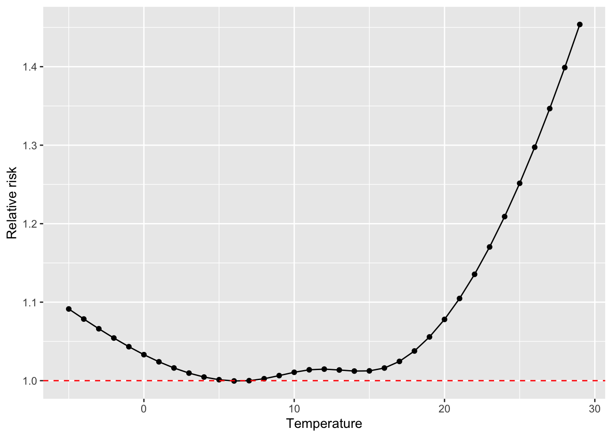

Chapter 4 Generalized linear models
4.1 Readings
The readings for this chapter are:
- Bhaskaran et al. (2013) Provides an overview of time series regression in environmental epidemiology.
- Vicedo-Cabrera, Sera, and Gasparrini (2019) Provides a tutorial of all the steps for a projecting of health impacts of temperature extremes under climate change. One of the steps is to fit the exposure-response association using present-day data (the section on “Estimation of Exposure-Response Associations” in the paper). In this chapter, we will go into details on that step, and that section of the paper is the only required reading for this chapter. Later in the class, we’ll look at other steps covered in this paper. Supplemental material for this paper is available to download by clicking http://links.lww.com/EDE/B504. You will need the data in this supplement for the exercises for class.
- B. G. Armstrong, Gasparrini, and Tobias (2014) This paper describes different data structures for case-crossover data, as well as how conditional Poisson regression can be used in some cases to fit a statistical model to these data. Supplemental material for this paper is available at https://bmcmedresmethodol.biomedcentral.com/articles/10.1186/1471-2288-14-122#Sec13.
The following are supplemental readings (i.e., not required, but may be of interest) associated with the material in this chapter:
- B. Armstrong (2006) Covers similar material as Bhaskaran et al. (2013), but with more focus on the statistical modeling framework (highly recommended!)
- Gasparrini and Armstrong (2010) Describes some of the advances made to time series study designs and statistical analysis, specifically in the context of temperature
- Basu, Dominici, and Samet (2005) Compares time series and case-crossover study designs in the context of exploring temperature and health. Includes a nice illustration of different referent periods, including time-stratified.
- Imai et al. (2015) Typically, the time series study design covered in this chapter is used to study non-communicable health outcomes. This paper discusses opportunities and limitations in applying a similar framework for infectious disease.
- Lu and Zeger (2007) Heavier on statistics. This paper shows how, under conditions often common for environmental epidemiology studies, case-crossover and time series methods are equivalent.
- Gasparrini (2014) Heavier on statistics. This provides the statistical framework for the distributed lag model for environmental epidemiology time series studies.
- Dunn and Smyth (2018) Introduction to statistical models, moving into regression models and generalized linear models. Chapter in a book that is available online through the CSU library.
- James et al. (2013) General overview of linear regression, with an R coding “lab” at the end to provide coding examples. Covers model fit, continuous, binary, and categorical covariates, and interaction terms. Chapter in a book that is available online through the CSU library.
4.2 Splines in GLMs
We saw from the last model, with a linear term for mean daily temperature, that the suggested effect on mortality is a decrease in daily mortality counts with increasing temperature. However, as you’ve probably guessed that’s likely not entirely accurate. A linear term for the effect of exposure restricts us to an effect that can be fitted with a straight line (either a null effect or a monotonically increasing or decreasing effect with increasing exposure).
This clearly is problematic in some cases. One example is when exploring the association between temperature and health risk. Based on human physiology, we would expect many health risks to be elevated at temperature extremes, whether those are extreme cold or extreme heat. A linear term would be inadequate to describe this kind of U-shaped association. Other effects might have a threshold—for example, heat stroke might have a very low risk at most temperatures, only increasing with temperature above a certain threshold.
We can capture non-linear patterns in effects, by using different functions of X. Examples are \(\sqrt{X}\), \(X^{2}\), or more complex smoothing functions, such as polynomials or splines. Polynomials might at first make a lot of sense, especially since you’ve likely come across polynomial terms in mathematics classes since grade school. However, it turns out that they have some undesirable properties. A key one is that they can have extreme behavior, particularly when using a high-order polynomial, and particularly outside the range of data that are available to fit the model.
An alternative that is generally preferred for environmental epidemiology studies is the regression spline. The word “spline” originally comes from drafting and engineering (ship building, in particular), where it described a flexible piece of wood or metal that you could use to draw a curved line—it created a curve that was flexible enough—but just flexible enough—to fit a space (see Wikipedia’s very interesting article on flat splines for more).
Splines follow a similar idea in mathematics, making them helpful tools when a line won’t fit your data well. In general, a spline fits together a few simpler functions to create something with a curve or non-linearity. Each simpler function operates within an interval of the data, and then they join together at “knots” along the range of the data. Regression splines are therefore simple parametric smoothing function, which fit separate polynomial in each interval of the range of the predictor; these can be linear, quadratic, and cubic.
The simplest example is a linear spline (also called a piecewise linear function). This type of spline creates non-linearity by having a breakpoint at the knot, allowing the slope of the line to be different in the intervals of data on either side of the knot. The following plot shows an example. Say you want to explore how mean temperature varies by the day in the year (Jan 1 = 1, Jan 2 = 2, and so on) in the London example dataset from the last chapter. Temperature tends to increase with day of year for a while, but then it changes around the start of August, after that decreasing with day of year. This patterns means that a line will give a bad fit for how temperature changes with day of year, since it smooths right through that change. On the other hand, you can get a very reasonable fit using a linear spline with a knot around August 1 (day 213 in the year). These two examples are shown in the following plot, with the linear function fit on the left and the linear spline on the right:
If you were to write out these regression models in mathematical notation, the linear one is very simple:
\[ Y_t = \alpha + \beta X_t \] where \(Y_t\) is the temperature on day \(t\), \(\alpha\) is the model intercept, \(X_t\) is the day of the year on day \(t\), and \(\beta\) is the estimated coefficient for \(X_t\).
The notation for the model with the linear spline is a bit more complex:
\[ Y_t = \alpha + \beta_1 X_t + \beta_2 (X_t - k)_+ \]
Here, \(Y_t\) is again the temperature on day \(t\), \(X_t\) is again the day of the year on day \(t\), and \(\alpha\) is again the intercept. The term \(k\) is the “knot”—the value of \(X\) where we’re letting the slope change. In this example, we’re using \(k = 213\). The term \((X_t - k)_+\) has a special meaning—it takes the value 0 if \(X_t\) is in the interval to the left of the knot, while if \(X_t\) is in the interval to the right of the knot, it takes the value of \(X_t\) minus the knot value:
\[ (X_t - k)_+ = \begin{cases} 0, & \mbox{if } X_t < k \\ X_t - k, & \mbox{if } X_t \ge k \end{cases} \] In this model, the coefficient \(\beta_1\) estimates the slope of the line to the left of the knot, while \(\beta_2\) estimates how that slope will change to the right of the knot.
Fortunately, we usually won’t have to get this complex in the model notation, especially when we use more complex splines (where the notation would get even more complex). Instead, we’ll often write out the regression equation in a simpler way, just indicating that we’re using a function of the covariate, rather than the covariate directly:
\[ Y_t = \alpha + f(X_t | \mathbf{\beta}) \]
where we can note that \(f(X_t)\) is a function of day of the year (\(X_t\)), fit in this case using a linear spline, and with a set of estimated coefficients \(\mathbf{\beta}\) for that function (see B. Armstrong (2006) for an example of using this model notation).
While a linear spline is the simplest conceptually (and mathematically), it often isn’t very satisfying, because it fits a function with a sharp breakpoint, which often isn’t realistic. For example, the linear spline fit above suggests that the relationship between day of the year and temperature changes abruptly and dramatically on August 1 of the year. In reality, we know that this change in the relationship between day of year and temperature is probably a lot smoother.
To fit smoother shapes, we can move to higher level splines. Cubic splines (“cubic” because they include terms of the covariate up to the third power) are very popular. An example of a cubic spline function is \(X+X^{2}+X^{3}+I((X>X_{0})*(X-X_{0})^3)\). This particular function is a cubic spline with four degrees of freedom (\(df=4\)) and one knot (\(X_{0}\)). A special type of cubic spline called a natural cubic spline is particularly popular. Unlike a polynomial function, a natural cubic spline “behaves” better outside the range of the data used to fit the model—they are constrained to continue on a linear trajectory once they pass beyond the range of the data.
Regression splines can be fit in a GLM via the package splines. Two commonly
used examples of regression splines are b-splines and natural cubic
splines. Vicedo-Cabrera, Sera, and Gasparrini (2019) uses natural cubic splines, which can be fit with the
ns (for “natural spline”) function from the splines package.
While splines are great for fitting non-linear relationships, they do create some challenges in interpreting the results. When you fit a linear relationship for a covariate, you will get a single estimate that helps describe the fitted relationship between that covariate and the outcome variable. However, when you use a non-linear function, you’ll end up with a mix of coefficients associated with that function. Sometimes, you will use splines to control for a potential confounder (as we will in the exercises for this first part of the chapter). In this case, you don’t need to worry about interpreting the estimated coefficients—you’re just trying to control for the variable, rather than inferring anything about how it’s associated with the outcome. In later parts of this chapter, we’ll talk about how to interpret these coefficients if you’re using a spline for the exposure that you’re interested in, when we talk more broadly about basis functions.
Applied: Including a spline in a GLM
For this exercise, you will continue to build up the model that you began in the examples in the previous chapter. The example uses the data provided with one of this chapter’s readings, Vicedo-Cabrera, Sera, and Gasparrini (2019).
- Start by fitting a somewhat simple model—how are daily mortality counts associated with (a) a linear and (b) a non-linear function of time? Is a linear term appropriate to describe this association? What types of patterns are captured by a non-linear function that are missed by a linear function?
- In the last chapter, the final version of the model used a GLM with an overdispersed Poisson distribution, including control for day of week. Start from this model and add control for long-term and seasonal trends over the study period.
- Refine your model to fit for a non-linear, rather than linear, function of temperature in the model. Does a non-linear term seem to be more appropriate than a linear term?
Applied exercise: Example code
- Start by fitting a somewhat simple model—how are daily mortality counts associated with (a) a linear and (b) a non-linear function of time?
It is helpful to start by loading the R packages you are likely to need, as well as the example dataset. You may also need to re-load the example data and perform the steps taken to clean it in the last chapter:
# Load some packages that will likely be useful
library(tidyverse)
library(viridis)
library(lubridate)
library(broom)
# Load and clean the data
obs <- read_csv("data/lndn_obs.csv") %>%
mutate(dow = wday(date, label = TRUE))For this first question, the aim is to model the association between time and daily mortality counts within the example data. This approach is often used to explore and, if needed, adjust for temporal factors in the data.
There are a number of factors that can act over time to create patterns in both environmental exposures and health outcomes. For example, there may be changes in air pollution exposures over the years of a study because of changes in regulations or growth or decline of factories and automobile traffic in an area. Changes in health care and in population demographics can cause patterns in health outcomes over the study period. At a shorter, seasonal term, there are also factors that could influence both exposures and outcomes, including seasonal changes in climate, seasonal changes in emissions, and seasonal patterns in health outcomes.
It can be difficult to pinpoint and measure these temporal factors, and so instead a common practice is to include model control based on the time in the study. This can be measured, for example, as the day since the start of the study period.
You can easily add a column for day in study for a dataset that
includes date. R saves dates in a special format, which we’re using the in
obs dataset:
class(obs$date)## [1] "Date"However, this is just a fancy overlay on a value that’s ultimately saved as
a number. Like most Unix programs, the date is saved as the number of days
since the Unix “epoch,” January 1, 1970. You can take advantage of this
convention—if you use as.numeric around a date in R, it will give you a
number that gets one unit higher for every new date. Here’s the example for
the first date in our example data:
obs$date[1]## [1] "1990-01-01"as.numeric(obs$date[1]) ## [1] 7305And here’s the example for the next date:
obs$date[2]## [1] "1990-01-02"as.numeric(obs$date[2])## [1] 7306You can use this convention to add a column that gives days since the first
study date. While you could also use the 1:n() call to get a number for
each row that goes from 1 to the number of rows, that approach would not
catch any “skips” in dates in the data (e.g., missing dates if only warm-season
data are included). The use of the dates is more robust:
obs <- obs %>%
mutate(time = as.numeric(date) - first(as.numeric(date)))
obs %>%
select(date, time)## # A tibble: 8,279 x 2
## date time
## <date> <dbl>
## 1 1990-01-01 0
## 2 1990-01-02 1
## 3 1990-01-03 2
## 4 1990-01-04 3
## 5 1990-01-05 4
## 6 1990-01-06 5
## 7 1990-01-07 6
## 8 1990-01-08 7
## 9 1990-01-09 8
## 10 1990-01-10 9
## # … with 8,269 more rowsAs a next step, it is always useful to use exploratory data analysis to look at the patterns that might exist for an association, before you start designing and fitting the regression model.
ggplot(obs,
aes(x = time, y = all)) +
geom_point(size = 0.5, alpha = 0.5)
There are clear patterns between time and daily mortality counts in these data. First, there is a clear long-term pattern, with mortality rates declining on average over time. Second, there are clear seasonal patterns, with higher mortality generally in the winter and lower rates in the summer.
To model this, we can start with fitting a linear term. In the last chapter,
we determined that the mortality outcome data can be fit using a GLM with a
Poisson family, allowing for overdispersion as it is common in real-life
count data like these. To include time as a linear term, we can just include
that column name to the right of the ~ in the model formula:
mod_time <- glm(all ~ time,
data = obs, family = "quasipoisson")You can use the augment function from the broom package to pull out the
fitted estimate for each of the original observations and plot that, along
with the observed data, to get an idea of what this model has captured:
mod_time %>%
augment() %>%
ggplot(aes(x = time)) +
geom_point(aes(y = all), alpha = 0.4, size = 0.5) +
geom_line(aes(y = exp(.fitted)), color = "red") +
labs(x = "Date in study", y = "Expected mortality count") 
This linear trend captures the long-term trend in mortality rates fairly well in this case. This won’t always be the case, as there may be some health outcomes—or some study populations—where the long-term pattern over the study period might be less linear than in this example. Further, the linear term is completely unsuccessful in capturing the shorter-term trends in mortality rate. These oscillate, and so would be impossible to capture over multiple years with a linear trend.
Instead, it’s helpful to use a non-linear term for time in the model. We can
use a natural cubic spline for this, using the ns function from the splines
package. You will need to clarify how flexible the spline function should be,
and this can be specified through the degrees of freedom for the spline. A
spline with more degrees of freedom will be “wigglier” over a given data range
compared to a spline with fewer degrees of freedom. Let’s start by using
158 degrees of freedom, which translates to about 7 degrees of freedom per year:
library(splines)
mod_time_nonlin <- glm(all ~ ns(time, df = 158),
data = obs, family = "quasipoisson")You can visualize the model results in a similar way to how we visualized the
last model. However, there is one extra step. The augment function only
carries through columns in the original data (obs) that were directly used
in fitting the model. Now that we’re using a transformation of the time
column, by wrapping it in ns, the time column is no longer included in the
augment output. However, we can easily add it back in using mutate,
pulling it from the original obs dataset, and then proceed as before.
mod_time_nonlin %>%
augment() %>%
mutate(time = obs$time) %>%
ggplot(aes(x = time)) +
geom_point(aes(y = all), alpha = 0.4, size = 0.5) +
geom_line(aes(y = exp(.fitted)), color = "red") +
labs(x = "Date in study", y = "Expected mortality count") The non-linear term for time has allowed enough flexibility that the model now captures both long-term and seasonal trends in the data.
You might wonder how many degrees of freedom you should use for this time spline. In practice, researchers often using about 6–8 degrees of freedom per year of the study, in the case of year-round data. You can explore how changing the degrees of freedom changes the way the model fits to the observed data. As you use more degrees of freedom, the line will capture very short-term effects, and may start to interfere with the shorter-term associations between environmental exposures and health risk that you are trying to capture. Even in the example model we just fit, for example, it looks like the control for time may be capturing some patterns that were likely caused by heatwaves (the rare summer peaks, including one from the 1995 heatwave). Conversely, if too few degrees of freedom are used, the model will shift to look much more like the linear model, with inadequate control for seasonal patterns.
# A model with many less d.f. for the time spline
mod_time_nonlin_lowdf <- glm(all ~ ns(time, df = 10),
data = obs, family = "quasipoisson")
mod_time_nonlin_lowdf %>%
augment() %>%
mutate(time = obs$time) %>%
ggplot(aes(x = time)) +
geom_point(aes(y = all), alpha = 0.4, size = 0.5) +
geom_line(aes(y = exp(.fitted)), color = "red") +
labs(x = "Date in study", y = "Expected mortality count") # A model with many more d.f. for the time spline
# (Takes a little while to run)
mod_time_nonlin_highdf <- glm(all ~ ns(time, df = 400),
data = obs, family = "quasipoisson")
mod_time_nonlin_highdf %>%
augment() %>%
mutate(time = obs$time) %>%
ggplot(aes(x = time)) +
geom_point(aes(y = all), alpha = 0.4, size = 0.5) +
geom_line(aes(y = exp(.fitted)), color = "red") +
labs(x = "Date in study", y = "Expected mortality count") 
In all cases, when you fit a non-linear function of an explanatory variable, it will make the model summary results look much more complicated, e.g.:
mod_time_nonlin_lowdf %>%
tidy()## # A tibble: 11 x 5
## term estimate std.error statistic p.value
## <chr> <dbl> <dbl> <dbl> <dbl>
## 1 (Intercept) 5.26 0.00948 555. 0.
## 2 ns(time, df = 10)1 -0.0260 0.0119 -2.18 2.93e- 2
## 3 ns(time, df = 10)2 -0.0860 0.0155 -5.56 2.85e- 8
## 4 ns(time, df = 10)3 -0.114 0.0139 -8.15 4.01e- 16
## 5 ns(time, df = 10)4 -0.196 0.0151 -13.0 4.47e- 38
## 6 ns(time, df = 10)5 -0.187 0.0148 -12.6 2.80e- 36
## 7 ns(time, df = 10)6 -0.315 0.0154 -20.5 5.62e- 91
## 8 ns(time, df = 10)7 -0.337 0.0154 -21.9 1.95e-103
## 9 ns(time, df = 10)8 -0.358 0.0135 -26.5 1.56e-148
## 10 ns(time, df = 10)9 -0.467 0.0244 -19.2 4.49e- 80
## 11 ns(time, df = 10)10 -0.392 0.0126 -31.2 8.01e-202You can see that there are multiple model coefficients for the variable fit
using a spline function, one less than the number of degrees of freedom. These
model coefficients are very hard to interpret on their own. When we are using
the spline to control for a factor that might serve as a confounder of the
association of interest, we typically won’t need to try to interpret these
model coefficients—instead, we are interested in accounting for how this
factor explains variability in the outcome, without needing to quantify the
association as a key result. However, there are also cases where we want to
use a spline to fit the association with the exposure that we are interested
in. In this case, we will want to be able to interpret model coefficients from
the spline. Later in this chapter, we will introduce the dlnm package, which
includes functions to both fit and interpret natural cubic splines within
GLMs for environmental epidemiology.
- Start from the last model created in the last chapter and add control for long-term and seasonal trends over the study period.
The last model fit in the last chapter was the following, which fits for the association between a linear term of temperature and mortality risk, with control for day of week:
mod_ctrl_dow <- glm(all ~ tmean + factor(dow, ordered = FALSE),
data = obs, family = "quasipoisson")To add control for long-term and seasonal trends, you can take the natural cubic
spline function of temperature that you just fit and include it among the
explanatory / independent variables from the model in the last chapter. If you
want to control for only long-term trends, a linear term of the time column
could work, as we discovered in the first part of this chapter’s exercise.
However, seasonal trends could certainly confound the association of interest.
Mortality rates have a clear seasonal pattern, and temperature does as well,
and these patterns create the potential for confounding when we look at how
temperature and mortality risk are associated, beyond any seasonally-driven
pathways.
mod_ctrl_dow_time <- glm(all ~ tmean + factor(dow, ordered = FALSE) +
ns(time, df = 158),
data = obs, family = "quasipoisson")You can see the influence of this seasonal confounding if you look at the model
results. When we look at the results from the model that did not control for
long-term and seasonal trends, we get an estimate that mortality rates tend to
be lower on days with higher temperature, with a negative term for tmean:
mod_ctrl_dow %>%
tidy() %>%
filter(term == "tmean")## # A tibble: 1 x 5
## term estimate std.error statistic p.value
## <chr> <dbl> <dbl> <dbl> <dbl>
## 1 tmean -0.0148 0.000354 -41.7 0Conversely, when we include control for long-term and seasonal trends, the estimated association between mortality rates and temperature is reversed, estimating increased mortality rates on days with higher temperature, controlling for long-term and seasonal trends:
mod_ctrl_dow_time %>%
tidy() %>%
filter(term == "tmean")## # A tibble: 1 x 5
## term estimate std.error statistic p.value
## <chr> <dbl> <dbl> <dbl> <dbl>
## 1 tmean 0.00370 0.000395 9.36 1.02e-20- Refine your model to fit for a non-linear, rather than linear, function of temperature in the model.
You can use a spline in the same way to fit a non-linear function for the
exposure of interest in the model (temperature). We’ll start there. However,
as mentioned earlier, it’s a bit tricky to interpret the coefficients from the
fit model—you no longer generate a single coefficient for the exposure of
interest, but instead several related to the spline. Therefore, once we show
how to fit using ns directly, we’ll show how you can do the same thing using
specialized functions in the dlnm package. This package includes a lot of
nice functions for not only fitting an association using a non-linear term,
but also for interpreting the results after the model is fit.
First, here is code that can be used to fit the model using ns directly,
similarly to the approach we used to control for temporal patterns with a
flexible function:
mod_ctrl_nl_temp <- glm(all ~ ns(tmean, 4) + factor(dow, ordered = FALSE) +
ns(time, df = 158),
data = obs, family = "quasipoisson")We can plot the predicted values from this fitted model (red points in the plot below)
compared to the observed data (black dots) using our usual method of using augment to
extract the predicted values:
mod_ctrl_nl_temp %>%
augment() %>%
mutate(tmean = obs$tmean) %>%
ggplot(aes(x = tmean)) +
geom_point(aes(y = all), alpha = 0.4, size = 0.5) +
geom_point(aes(y = exp(.fitted)), color = "red", size = 0.4) +
labs(x = "Daily mean temperature", y = "Expected mortality count") 
However, these predictions are very variable at any given temperature. This reflects how other independent variables, like long-term and seasonal trends, explain variability in mortality. This makes sense, but it makes it a bit hard to investigate the role of temperature specifically. Let’s look, then, at some other options for viewing the results that will help us focus on the association of the exposure we care about (temperature) with the outcome.
The next part has a lot of steps, so it might at first seem confusing. However, fortunately we won’t always have to do all the steps ourselves—there is a nice R package that will help us. We’ll look at the process first, though, and then the easier way to use a package to help with some of the steps. Also, this process gives us a first look at how the idea of basis functions work. We’ll later expand on these to look at non-linear relationships with the exposure at different lag times, using cross-basis functions, so this forms a starting point for moving into the idea of a cross-basis.
First, we need to think about how temperature gets included in the regression model—specifically, as a function of basis variables rather than as a single variable. In other words, to include temperature as a nonlinear function, we’re going to create a structure in the regression equation that includes the variable of temperature in several different terms, in different transformations in each term. I simple example of this is a second-degree polynomial. If we wanted to include a second-order polynomial function of temperature in the regression, then we’d use the following basis:
\[ \beta_1 T + \beta_2 T^2 \]
Notice that here we’re using the same independent variable (\(T\), which stands for daily temperature), but we’re including both untransformed \(T\) and also \(T\) squared. This function of \(T\) might go into the regression equation as something like:
\[ E(Y) = \alpha + \beta_1 T + \beta_2 T^2 + ns(time) + \mathbf{\gamma^{'}D} \] where \(\alpha\) is the intercept, \(ns(time)\) is a natural cubic spline that controls for time (long-term and seasonal trends) and \(\mathbf{D}\) is day of week, with \(\mathbf{\gamma}\) as the set of coefficients associated with day of week. (Here, I’ve included the outcome, \(Y\), untransformed, as you would for a linear regression, but of course the same idea works with Poisson regression, when you’d instead have \(log(E(Y))\) on the left of the equation.)
When you fit a regression model in a program like R, it sets up the observed data into
something called a model matrix, where it has the values for each observation for each of
the independent variables you want to include, plus a column of “1”s for the intercept, if you
model structure includes one. The regression model will fit a coefficient
for each of these columns in the model matrix. In a simple case, this model matrix will just
repeat each of your independent variables. For example, the model matrix for the model
mod_overdisp_reg, which we fit in the last chapter and which included only an intercept
and a linear term for tmean, looks like this (the model.matrix function will give you
the model matrix of any glm object that you get by running the glm function in R):
mod_ovdisp_reg %>%
model.matrix() %>%
head()## (Intercept) tmean
## 1 1 3.913589
## 2 1 5.547919
## 3 1 4.385564
## 4 1 5.431046
## 5 1 6.867855
## 6 1 9.232628We already start using the idea of basis variables when we include categorical variables, like
day of week. Here is the model matrix for the mod_ctrl_dow model that we fit in the last
chapter:
mod_ctrl_dow %>%
model.matrix() %>%
head()## (Intercept) tmean factor(dow, ordered = FALSE)Mon
## 1 1 3.913589 1
## 2 1 5.547919 0
## 3 1 4.385564 0
## 4 1 5.431046 0
## 5 1 6.867855 0
## 6 1 9.232628 0
## factor(dow, ordered = FALSE)Tue factor(dow, ordered = FALSE)Wed
## 1 0 0
## 2 1 0
## 3 0 1
## 4 0 0
## 5 0 0
## 6 0 0
## factor(dow, ordered = FALSE)Thu factor(dow, ordered = FALSE)Fri
## 1 0 0
## 2 0 0
## 3 0 0
## 4 1 0
## 5 0 1
## 6 0 0
## factor(dow, ordered = FALSE)Sat
## 1 0
## 2 0
## 3 0
## 4 0
## 5 0
## 6 1You can see that the regression call broke the day-of-week variable up into a set of indicator variables, which equal either 1 or 0. There will be one less of these than the number of categories for the variable; in otherwords, if the categorical variable took two values (Weekend / Weekday), then this would be covered by a single column; since there are seven days in the week, the day-of-week variable breaks into six (7 - 1) columns. The first level of the categories (Sunday in this case) serves as a baseline and doesn’t get a value. The others levels (Monday, Tuesday, etc.) each get their own indicator variable—so, their own column in the model matrix—which equals “1” on that day (i.e., “1” for the Monday column if the date of the observation is a Monday) and “0” on all other days.
Now let’s go back and look at the example of including temperature in the model as a nonlinear
function, starting with the simple example of using a second-degree polynomial. What would
the basis for that look like? We can find out by fitting the model and then looking at the
model matrix (the I() function lets us specify a transformation of a column from the
data when we set up the regression equation structure in glm):
mod_polynomial_temp <- glm(all ~ tmean + I(tmean ^ 2),
data = obs, family = "quasipoisson")
mod_polynomial_temp %>%
model.matrix() %>%
head()## (Intercept) tmean I(tmean^2)
## 1 1 3.913589 15.31618
## 2 1 5.547919 30.77941
## 3 1 4.385564 19.23317
## 4 1 5.431046 29.49627
## 5 1 6.867855 47.16743
## 6 1 9.232628 85.24142You can see that this has created two columns based on the temperature variable, one with it untransformed and one with it squared. The regression will estimate coefficients for each of these basis variables of temperature, and then that allows you to fit a model with a function of temperature, rather than solely temperature. Here are the coefficients from this model:
mod_polynomial_temp %>%
tidy()## # A tibble: 3 x 5
## term estimate std.error statistic p.value
## <chr> <dbl> <dbl> <dbl> <dbl>
## 1 (Intercept) 5.31 0.00675 787. 0.
## 2 tmean -0.0298 0.00126 -23.6 2.27e-119
## 3 I(tmean^2) 0.000667 0.0000538 12.4 5.70e- 35Therefore, it’s fit the following model to describe the association between temperature and mortality:
\[ log(E(Y)) = 5.3092 - 0.0298T + 0.0007T^2 \] If you want to estimate the relative risk of mortality at 15 degrees Celsius versus 10 degrees Celsius with this model (which is confounded by long-term and seasonal trends, so has some issues we’ll want to fix), you can take the following process. Take the two equations for the expected mortality when \(T\) is 15 and 10, respectively:
\[ log(E(Y|T=15)) = 5.3092 - 0.0298(15) + 0.0007(15^2) \\ log(E(Y|T=10)) = 5.3092 - 0.0298(10) + 0.0007(10^2) \] If you subtract the second from the first, you get:
\[ log(E(Y|T=15)) - log(E(Y|T=10)) = (5.3092 - 5.3092) - 0.0298(15 - 10) + 0.0007(15^2 - 10^2) \] which simplifies to (if the left part isn’t clear, review the rules for how you can manipulate logarithms):
\[ log(\frac{E(Y|T=15)}{E(Y|T=10)}) = - 0.0298(5) + 0.0007(125) = -0.0615 \] Exponentiate both sides, to get to the relative risk at 15 degrees versus 10 degrees (in other words, the ratio of expected mortality at 15 degrees to that at 10 degrees):
\[ \frac{E(Y|T=15)}{E(Y|T=10)} = e^{-0.0615} = 0.94 \] You can see that the basis variables are great in helping us explore how an independent variable might be related to the outcome in a non-linear way, but there’s a bit of a cost in terms of us needing to take some extra steps to interpret the results from that model. Also, note that there’s not a single coefficient that we can extract from the model as a summary of the relationship. Instead, we needed to pick a reference temperature (10 degrees in this example) and compare to that to get an estimated relative risk. We’ll see the same pattern as we move to using natural cubic splines to create the basis variables for temperature.
Now let’s move to a spline. The function the spline runs to transform the temperature
variable into the different basis variables is more complex than for the polynomial example,
but the result is similar: you get several columns to fit in the model for a variable, compared
to the single column you would include if you were only fitting a linear term. If you
take a look at the output of running the ns function on temperature in the data, you can
see that it creates several new columns (one for each degree of freedom), which will be the
basis variables in the regression:
ns(obs$tmean, df = 4) %>%
head()## 1 2 3 4
## [1,] 0.1769619 -0.20432696 0.4777110 -0.2733841
## [2,] 0.2860253 -0.19686120 0.4602563 -0.2633951
## [3,] 0.2049283 -0.20410506 0.4771922 -0.2730872
## [4,] 0.2770456 -0.19804188 0.4630167 -0.2649748
## [5,] 0.4012496 -0.17595974 0.4113892 -0.2354295
## [6,] 0.6581858 -0.09844302 0.2476396 -0.1417190The output from ns also has some metadata, included in the attributes of the object, that
have some other information about the spline function, including where the knots were
placed and where the boundary knots (which are at the outer ranges of the data) are placed.
You can the str function to explore both the data and metadata stored in this object:
ns(obs$tmean, df = 4) %>%
str()## 'ns' num [1:8279, 1:4] 0.177 0.286 0.205 0.277 0.401 ...
## - attr(*, "dimnames")=List of 2
## ..$ : NULL
## ..$ : chr [1:4] "1" "2" "3" "4"
## - attr(*, "degree")= int 3
## - attr(*, "knots")= Named num [1:3] 7.47 11.47 15.93
## ..- attr(*, "names")= chr [1:3] "25%" "50%" "75%"
## - attr(*, "Boundary.knots")= num [1:2] -5.5 29.1
## - attr(*, "intercept")= logi FALSEThis is saying, for example, that the internal knots for this spline were put at the
25th, 50th, and 75th quantiles of the temperature data, where were 7.47 degrees, 11.47 degrees,
and 15.93 degrees. (The defaults for ns is to place knots evenly at percentiles, based
on the number of degrees of freedom you specify. You can change this by placing the knots
“by hand,” using the knots argument in the ns function.)
This spline object can be used not just for its basis values, but also to “predict” new basis values for a new set of temperature values. For example, you could figure out what the basis values from this spline would be for every degree of temperature between -6 and 29 using the following code:
temp_spline <- ns(obs$tmean, df = 4)
temp_spline_preds <- predict(temp_spline, newx = -6:29)
temp_spline_preds %>%
head()## 1 2 3 4
## [1,] 0.000000e+00 0.01591874 -0.03721760 0.02129885
## [2,] 2.689545e-05 -0.01606406 0.03755734 -0.02149328
## [3,] 7.189726e-04 -0.04768237 0.11148013 -0.06379775
## [4,] 3.321933e-03 -0.07825364 0.18295494 -0.10470130
## [5,] 9.107577e-03 -0.10708098 0.25035250 -0.14327152
## [6,] 1.934771e-02 -0.13346753 0.31204355 -0.17857602This is handy, because it will help us visualize the relationship we fit in a regression model—we can start with these basis values for each degree in our temperature range, and then use the regression coefficients for each basis variable to estimate relative risk at that temperature compared to a reference temperature, exactly as we did in the equations for the polynomial function of temperature earlier, comparing 15 degrees C to the reference of 10 degrees.
All we need now are the regression coefficients for each of these temperature basis
variables. We can extract those from the model we fit earlier, where we included
ns(tmean, 4) as one of the model terms. Here, I’m using tidy to get the model
coefficients and then, because there are lots of them (from fitting a spline for
time with lots of degrees of freedom), I’m using the str_detect function from the
stringr package to pick out just those with “tmean” in the term column:
mod_ctrl_nl_temp %>%
tidy() %>%
filter(str_detect(term, "tmean"))## # A tibble: 4 x 5
## term estimate std.error statistic p.value
## <chr> <dbl> <dbl> <dbl> <dbl>
## 1 ns(tmean, 4)1 -0.0700 0.0135 -5.18 2.30e- 7
## 2 ns(tmean, 4)2 -0.0660 0.0126 -5.24 1.61e- 7
## 3 ns(tmean, 4)3 0.0110 0.0313 0.350 7.26e- 1
## 4 ns(tmean, 4)4 0.347 0.0177 19.6 2.02e-83You can add on pull to pull out just the estimate column as a vector, which will be
helpful when we want to multiple these coefficients by the basis values for each degree
of temperature across our temperature range:
temp_spline_ests <- mod_ctrl_nl_temp %>%
tidy() %>%
filter(str_detect(term, "tmean")) %>%
pull(estimate)
temp_spline_ests## [1] -0.06995454 -0.06596939 0.01095574 0.34659715Now, let’s put this together to see how relative risk of mortality changes as you move
across the temperature range! First, we can set up a dataframe that has a column with
each unit of temperature across our range—these are the temperatures where we want to
estimate relative risk—and then the estimated relative risk at that temperature. By
default, we’ll be comparing to the lowest temperature in the original data, but we’ll talk
in a minute about how to adjust to a different reference temperature. You can use
matrix multiplication (%*%) as a shorthand way to multiple each column of the spline
basis variables from temp_spline_preds by its estimated coefficient from the regression
model, saved in temp_spline_ests, and then add all of those values together (this is
the same idea as what we did in the equations earlier, for the polynomial basis). Then,
to get from log relative risk to relative risk, we’ll exponentiate that with exp. You
can see the first rows of the results below:
pred_temp_function <- tibble(
temp = -5:30,
temp_func = temp_spline_preds %*% temp_spline_ests,
rr = exp(temp_func)
)
pred_temp_function %>%
head()## # A tibble: 6 x 3
## temp temp_func[,1] rr[,1]
## <int> <dbl> <dbl>
## 1 -5 0.00592 1.01
## 2 -4 -0.00598 0.994
## 3 -3 -0.0178 0.982
## 4 -2 -0.0294 0.971
## 5 -1 -0.0405 0.960
## 6 0 -0.0510 0.950This is now very easy to plot, with a reference line added at a relative risk of 1.0:
ggplot(pred_temp_function, aes(x = temp, y = rr)) +
geom_point() +
geom_line() +
labs(x = "Temperature",
y = "Relative Risk") +
geom_hline(yintercept = 1.0, color = "red", linetype = 2)
We might want to shift this, so we’re comparing the temperature at which mortality risk is lowest (sometimes called the minimum mortality temperature). This tends to be at milder temperatures, in the middle of our range, rather than at the minimum temperature in the range. To start, let’s see what temperature aligns with the lowest relative risk of mortality:
pred_temp_function %>%
filter(rr == min(rr))## # A tibble: 1 x 3
## temp temp_func[,1] rr[,1]
## <int> <dbl> <dbl>
## 1 7 -0.0938 0.911We can therefore realign so that the relative risk equals 1.0 when the temperature is 7 degrees C, and all other relative risks are relative to a reference temperature of 7 degrees C:
pred_temp_function <- pred_temp_function %>%
mutate(temp_func_reset = temp_func - temp_func[temp == 7],
rr_reset = exp(temp_func_reset)
)
ggplot(pred_temp_function, aes(x = temp, y = rr_reset)) +
geom_point() +
geom_line() +
labs(x = "Temperature",
y = "Relative Risk") +
geom_hline(yintercept = 1.0, color = "red", linetype = 2)
This is a fairly cumbersome process, as you’ve seen with this example, and it would be a
pain if we had to do it every time we wanted to visualize and explore results from fitting
regressions that include basis variables from splines. Fortunately, there’s a nice R package
called dlnm (for “distributed lag nonlinear models”) that will help take care of a lot of
these “under the hood” steps for us. Even better, this package will let us move on to more
complex crossbasis functions, where we fit non-linear functions in two dimensions, and help
us visualize and interpret results from those models.
To start, make sure you have the dlnm package installed on your computer, and then load
it in your R session. This package has a function called crossbasis that lets you build
a crossbasis function to use in a regression model. We’ll talk more about these types
of functions later in this chapter; for right now, we’ll be a bit simpler and just use it
to create our spline function of temperature.
In the crossbasis function, you start by putting in the vector of the variable that you
want to expand into basis variables. In our case, this is temperature, which we have saved
as the tmean column in the obs dataset. You use the argvar to give some information
about the basis you want to use for that variable. This will both include the type of
basis function ("ns" for a natural cubic spline), and then also arguments you want to
pass to that basis function, like degrees of freedom (df) or knot locations (knots)
if you’re fitting a spline. The other arguments allow you to specify a function of lagged
time; we won’t use that yet, so you can just include lag = 0 and arglag = list(fun = "integer") to create a crossbasis where we only consider same-day effects in a simple way.
If you look at the output, you’ll see it’s very similar to the basis created by the
ns call earlier (in fact, the values in each column should be identical):
library(dlnm)
temp_basis <- crossbasis(obs$tmean, lag = 0,
argvar = list(fun = "ns", df = 4),
arglag = list(fun = "integer"))
temp_basis %>%
head()## v1.l1 v2.l1 v3.l1 v4.l1
## [1,] 0.1769619 -0.20432696 0.4777110 -0.2733841
## [2,] 0.2860253 -0.19686120 0.4602563 -0.2633951
## [3,] 0.2049283 -0.20410506 0.4771922 -0.2730872
## [4,] 0.2770456 -0.19804188 0.4630167 -0.2649748
## [5,] 0.4012496 -0.17595974 0.4113892 -0.2354295
## [6,] 0.6581858 -0.09844302 0.2476396 -0.1417190To estimate the regression coefficients, we’ll put this whole crossbasis in as one of
our terms in the glm regression equation:
dlnm_mod_1 <- glm(all ~ temp_basis + factor(dow, ordered = FALSE) +
ns(time, df = 158),
data = obs, family = "quasipoisson")As when we fit the spline earlier, you can see that this gives us a set of coefficients, one for each column in the matrix of crossbasis variables:
dlnm_mod_1 %>%
tidy() %>%
filter(str_detect(term, "temp_basis"))## # A tibble: 4 x 5
## term estimate std.error statistic p.value
## <chr> <dbl> <dbl> <dbl> <dbl>
## 1 temp_basisv1.l1 -0.0700 0.0135 -5.18 2.30e- 7
## 2 temp_basisv2.l1 -0.0660 0.0126 -5.24 1.61e- 7
## 3 temp_basisv3.l1 0.0110 0.0313 0.350 7.26e- 1
## 4 temp_basisv4.l1 0.347 0.0177 19.6 2.02e-83However, there’s an advantage with using crossbasis, even though it’s looked pretty similar
to using ns up to now. That’s that there are some special functions that let us predict
and visualize the model results without having to do all the work we did before.
For example, there’s a function called crosspred that will give us a number of values,
including the estimated relative risk compared to a reference value. To use this, we
need to input the object name of our crossbasis object (temp_basis) and the name of our
regression model object (dlnm_mod_1). We also want to tell it which temperature we want
to use as our reference (cen = 7 to compare everything to 7 degrees C) and what interval
we want for predictions (by = 1 will give us an estimate for every degree temperature
along our range). The output is a list with a lot of elements, which you can get a view of
with str:
crosspred(basis = temp_basis, model = dlnm_mod_1, cen = 7, by = 1) %>%
str()## List of 19
## $ predvar : num [1:35] -5 -4 -3 -2 -1 0 1 2 3 4 ...
## $ cen : num 7
## $ lag : num [1:2] 0 0
## $ bylag : num 1
## $ coefficients: Named num [1:4] -0.07 -0.066 0.011 0.347
## ..- attr(*, "names")= chr [1:4] "temp_basisv1.l1" "temp_basisv2.l1" "temp_basisv3.l1" "temp_basisv4.l1"
## $ vcov : num [1:4, 1:4] 1.83e-04 1.12e-04 3.85e-04 6.58e-05 1.12e-04 ...
## ..- attr(*, "dimnames")=List of 2
## .. ..$ : chr [1:4] "temp_basisv1.l1" "temp_basisv2.l1" "temp_basisv3.l1" "temp_basisv4.l1"
## .. ..$ : chr [1:4] "temp_basisv1.l1" "temp_basisv2.l1" "temp_basisv3.l1" "temp_basisv4.l1"
## $ matfit : num [1:35, 1] 0.0874 0.0756 0.064 0.0529 0.0424 ...
## ..- attr(*, "dimnames")=List of 2
## .. ..$ : chr [1:35] "-5" "-4" "-3" "-2" ...
## .. ..$ : chr [1, 1] "lag0"
## $ matse : num [1:35, 1] 0.01435 0.01254 0.01077 0.00907 0.00746 ...
## ..- attr(*, "dimnames")=List of 2
## .. ..$ : chr [1:35] "-5" "-4" "-3" "-2" ...
## .. ..$ : chr [1, 1] "lag0"
## $ allfit : Named num [1:35] 0.0874 0.0756 0.064 0.0529 0.0424 ...
## ..- attr(*, "names")= chr [1:35] "-5" "-4" "-3" "-2" ...
## $ allse : Named num [1:35] 0.01435 0.01254 0.01077 0.00907 0.00746 ...
## ..- attr(*, "names")= chr [1:35] "-5" "-4" "-3" "-2" ...
## $ matRRfit : num [1:35, 1] 1.09 1.08 1.07 1.05 1.04 ...
## ..- attr(*, "dimnames")=List of 2
## .. ..$ : chr [1:35] "-5" "-4" "-3" "-2" ...
## .. ..$ : chr [1, 1] "lag0"
## $ matRRlow : num [1:35, 1] 1.06 1.05 1.04 1.04 1.03 ...
## ..- attr(*, "dimnames")=List of 2
## .. ..$ : chr [1:35] "-5" "-4" "-3" "-2" ...
## .. ..$ : chr [1, 1] "lag0"
## $ matRRhigh : num [1:35, 1] 1.12 1.11 1.09 1.07 1.06 ...
## ..- attr(*, "dimnames")=List of 2
## .. ..$ : chr [1:35] "-5" "-4" "-3" "-2" ...
## .. ..$ : chr [1, 1] "lag0"
## $ allRRfit : Named num [1:35] 1.09 1.08 1.07 1.05 1.04 ...
## ..- attr(*, "names")= chr [1:35] "-5" "-4" "-3" "-2" ...
## $ allRRlow : Named num [1:35] 1.06 1.05 1.04 1.04 1.03 ...
## ..- attr(*, "names")= chr [1:35] "-5" "-4" "-3" "-2" ...
## $ allRRhigh : Named num [1:35] 1.12 1.11 1.09 1.07 1.06 ...
## ..- attr(*, "names")= chr [1:35] "-5" "-4" "-3" "-2" ...
## $ ci.level : num 0.95
## $ model.class : chr [1:2] "glm" "lm"
## $ model.link : chr "log"
## - attr(*, "class")= chr "crosspred"The one we’ll look at right now is allRRfit. You can extract it with (here I’m showing
how you can do it with piping and the pluck function to pull out an element of a list,
but you could do other approaches, too):
est_rr <- dlnm_mod_1 %>%
crosspred(basis = temp_basis, model = ., cen = 7, by = 1) %>%
pluck("allRRfit")
est_rr## -5 -4 -3 -2 -1 0 1 2
## 1.0913393 1.0785207 1.0661255 1.0543222 1.0432720 1.0331298 1.0240458 1.0161668
## 3 4 5 6 7 8 9 10
## 1.0096382 1.0046057 1.0012180 0.9996288 1.0000000 1.0024680 1.0064490 1.0106777
## 11 12 13 14 15 16 17 18
## 1.0138437 1.0147024 1.0135774 1.0122284 1.0124622 1.0160921 1.0245314 1.0378080
## 19 20 21 22 23 24 25 26
## 1.0557076 1.0780540 1.1046963 1.1354974 1.1703226 1.2090286 1.2514526 1.2974015
## 27 28 29
## 1.3466411 1.3988856 1.4537866To make it easier to work with, let’s put this in a dataframe. Note that the temperatures
are included as the names in the vector, so we can extract those with names:
dlnm_temp_function <- tibble(tmean = as.numeric(names(est_rr)),
rr = est_rr)
dlnm_temp_function %>%
head()## # A tibble: 6 x 2
## tmean rr
## <dbl> <dbl>
## 1 -5 1.09
## 2 -4 1.08
## 3 -3 1.07
## 4 -2 1.05
## 5 -1 1.04
## 6 0 1.03This has gotten us (much more quickly!) to estimates of the relative risk of mortality at
each temperature compared to a reference of 7 degrees C. We can plot this the same way we
did earlier, and you’ll notice that this plot is identical to the one we created based on the
regression with ns earlier:
ggplot(dlnm_temp_function, aes(x = tmean, y = rr)) +
geom_point() +
geom_line() +
labs(x = "Temperature", y = "Relative risk") +
geom_hline(yintercept = 1.0, color = "red", linetype = 2)
The dlnm package also includes some functions specifically for plotting. One downside
is that they’re in base R, rather than based on ggplot2, which makes them a bit
harder to customize. However, they’re a great way to get a first look at your results:
dlnm_mod_1 %>%
crosspred(basis = temp_basis, model = ., cen = 7, by = 1) %>%
plot()
Don’t worry if all of this about basis functions is a lot! If this is the first time you’ve seen this, it will likely take a few passes to get comfortable with it—and while the idea of basis variables is fairly straightforward, it’s certainly not straightforward to figure out how to interpret the results of the model that you fit. It is worth the effort, though, as this is a very powerful tool when working with regression modeling in environmental epidemiology.
4.3 Distributed lags and cross-basis functions in GLMs
Next, let’s explore how we can add into our model something that lets us look at delayed effects and the potential for mortality displacement. So far, we have only considered how temperature affects mortality risk on the day of exposure—in other words, if it is very hot today, does risk of mortality go up substantially today? For many exposures, however, risk can persist after the day of exposure.
In some cases, this may be caused by a delay in detection of the outcome in the data we have. For example, extreme heat today could precipitate a respiratory or cardiac event that the person may not seek treatment for or result in an outcome like mortality until tomorrow, and so in the data the outcome would be recorded at a one-day delay from the exposure.
In other cases, the path from the exposure to the outcome may take several days. For example, cold temperatures are often found to be associated with respiratory outcomes a week or more after exposures (something you can look for in the example data!), and one potential pathway is that cold temperatures might promote the spread of respiratory infectious disease, like influenza and colds, both through making people stay inside in more crowded, less ventilated conditions and also through effects on humidity and other conditions that might influence the behavior of respiratory droplets, which are key players in spreading some respiratory diseases. Since there is an incubation time up to several days for these infectious diseases, we might expect a lagged association between temperature and respiratory outcomes under this scenario.
There is another lagged pattern that can be important to check for, as well—one
that indicates mortality displacement. For many ambient environmental exposures,
there are clear indications that associations with health outcomes are strongest
among older adults or other populations with a disproportionately high percent
of people who are frail before exposure. One question that comes up, then, is
if, when an exposure is associated with excess deaths, these are deaths that are
displaced in time by only a few days or weeks, rather than deaths that represent
a larger time of life lost. This question—of whether deaths observed to be
associated with an environmental exposure were displaced by only a small amount of
time—can be explored by investigating whether an observed increase in mortality
across a community during an exposure is then offset by a lower-than-expected
rate of mortality in the following days and weeks.This phenomenon is sometimes
also referred to as ‘harvesting’ or a ‘harvesting effect.’
All of these questions can be explored through a type of model called a distributed lag model. Conceptually, these models investigate how an exposure today is associated with risk of a health outcome not only today, but also in the following days. In time-series studies where we typically want to estimate potential short-term and/or acute effects, and because we are concerned about potential confounding by seasonal trends—and have incorporated control for these trends in our models—we often restrict these models to only look up to about a month following exposure. However, this can help in identifying delayed effects of an exposure days to weeks following the initial exposure, and can also help in determining the role of mortality displacement in accounting for some or all of the excess deaths that are associated with an exposure. While some environmental exposures of interest have mostly immediate effects (e.g., hot temperature), others, including many air pollutants, tend to have effects that are stretched over a longer period of one or more days from exposure. As a result, distributed lag models are used widely in environmental epidemiology studies of time series data, to ensure that important associations aren’t missed by limiting the model to focus on risk that are detectable on the same day as the exposure. They can also help us identify influential windows of exposure as well as help eliminate potential confoundign by exposures occurring at proximal times to the window of interest. For example, today’s exposure may appear to have an effect on a helath outcome even if in reality yesterday’s exposure is the influential one and we don’t control for it, because today’s and yesterday’s exposure to temperature or air pollution are likely to be very similar.
To fit a distributed lag model, you can start with a fairly straightforward extension of the regression models we’ve been fitting, especially if you are investigating an exposure that can be plausibly fit with a linear term (rather than a more complex non-linear basis function) in the regression model. Say you are starting, for example, from the following regression model:
\[ log(E(Y)) = \alpha + \beta X + \mathbf{\gamma^{'}W} + ns(time) \]
In this model, you are using a Poisson regression to investigate how risk of the health outcome (\(Y\)) changes for every unit increase in the exposure (\(X\)), assuming a linear relationship between the exposure and the log of the health outcome. The model can include control for confounders like day of week (\(\mathbf{W}\)) and long-term and seasonal time trends (\(ns(time)\)). This model should look familiar from some of the models we’ve fit earlier to the example temperature data.
To expand this model to explore associations of temperature at different lags, the simplest approach is to add a term for each lag—in other words, instead of only having a term for temperature on the same day as the outcome measurement, we’ll also include a term for temperature the previous day, and the day before that, and so on. For example, here’s what the model would look like if we included terms up to lag 2:
\[ log(E(Y)) = \alpha + \beta_{0} X_{0} + \beta_{1} X_{1} + \beta_{2} X_{2} + \mathbf{\gamma^{'}W} + ns(time) \] where \(X_0\) is temperature on the same day as the measured outcome \(Y\) (with an associated coefficient \(\beta_0\)), \(X_1\) is the temperature the day before (with an associated coefficient \(\beta_1\)), and \(X_2\) is the temperature two days before (with an associated coefficient \(\beta_2\)). The interpretation of each of these coefficients is similar—\(exp(\beta_2)\), for example, gives our estimate of the change in the relative risk of the outcome \(Y\) for every one-unit increase in the exposure two days prior.
It can become cumbersome to write out the separate terms for each lag day, so you’ll often see equations for distributed lag models written using a shorter approach with the \(\sum\) symbol. The \(\sum\) symbol expresses several terms that are added together and so is well-suited for shortening the expression of a distributed lag model. For example, the previous model equation could be rewritten as:
\[ log(E(Y)) = \alpha + \sum_{l=0}^2{\beta_lX_l} + \mathbf{\gamma^{'}W} + ns(time) \]
This version of a distributed lag model is nice because it is fairly simple—we’re taking the idea of fitting a linear term for an exposure, and then expanding it to look include the exposure on earlier days by adding the same type of term for exposure measured at each lag. However, it does have some downsides. The main downside is that as we alluded to above, exposure tends to be very strongly correlated from one day to the next. Any time you put different terms in a regression model that are correlated, you create the risk of collinearity, and associated problemswith fitting the model. The term collinearity refers to the idea that you have two or more columns in your model matrix that give identical (or, if you loosen the definition a bit, very similar) information. To fit coefficients for each term, the modeling algorithm is trying to identify weights to place on each column in the model matrix that result in a model that gives the best likelihood of the data you see. If two or more columns have (almost) identical information, then the algorithm struggles to determine how to define weight across these two columns. The implications are that you can end up with a lot of instability in model coefficients for the columns that are collinear, as well as very inflated estimates of the standard error. Long story short, it can cause problems in your regression model if you include independent variables that are very strongly correlated with each other, and so we usually try to avoid doing that.
There are alternative distributed lag models that can help avoid this instability that can arise from fitting a distributed lag by using a separate term for each lag. All of them share a common feature—they somehow fit a function of the lags instead of each separate lag, so that we end up adding fewer terms to the regression model (and, in term, are somewhat constraining that pattern that the distributed lag effects follow). The most extreme is to use a term that reduces all the lag terms to a single term, which you can do by averaging the exposure across all lags. In other words, you could take the same-day temperature, yesterday’s temperature, and the temperature the day before that, and average those three temperatures to create the term you put in the model. The model equation in this case would look like:
\[ log(E(Y)) = \alpha + \beta_{\overline{0-2}} X_{\overline{0-2}} + \mathbf{\gamma^{'}W} + ns(time) \] where \(\overline{0-2}\) represents an average over lags 0 to 2, and so \(X_{\overline{0-2}}\) is the average of the exposure on lags 0, 1, and 2 compared to the day that \(Y\) is measured.
This approach avoids any issues with collinearity across exposure terms from different lags, because you’re only including a single term for exposure in the model. However, there is a downside—this model will provide you with a single estimate for the lagged effects, without allowing you to explore patterns across lags (for example, is the association mostly on the day of exposure, or are there some delayed effects on following days? the main assumption is that the effect is constant across all days in the window of interest).
Another approach is more complex, but it allows you to explore patterns across lags.
Instead of reducing the lagged exposure to a single term in the model, you can reduce
it to a few terms that represent the basis for a smooth function. Often, a polynomial
or natural cubic spline function will be used for this. The details of setting up the
model become more complex, but fortunately there are software packages (like the dlnm
package in R) that help in managing this set-up, as we’ll explore in the exercise.
Packages like dlnm can help in extending the complexity of the distributed lag model
in other ways, too. So far, we have explored using a distributed lag model where we
are happy to model the exposure using a linear term. As we’ve seen in earlier exercises,
this isn’t ideal for temperature. Instead, temperature has a non-linear association
with mortality risk, with the lowest risk at mild temperatures and then increased risk
at both lower (colder) and higher (hotter) temperatures.
We can fit a GLM that incorporates the exposure using a non-linear shape while, at the
same time, including a non-linear function to describe how the association evolves
across lagged time following the exposure. The approach is to extend the idea of
using a basis function—instead of using a basis function in a single dimension, we’ll
use cross of basis functions in two dimensions. One dimension is the level of exposure
(e.g., cold to hot temperatures), and the other is the timing between the exposure and
the outcome (e.g., same-day to lagged by many days). In terms of the mechanics of
building a model matrix to use to fit the regression model, everything follows directly
from the idea we explored early of using a function like a spline to create basis
variables in that model matrix for a term with a non-linear association with the
outcome variable. However, the mechanics do get quite cumbersome as so many terms are
included, and so again we will use the dlnm package to handle these mechanics as we
start to incorporate these cross-basis functions within a GLM.
Applied: Including a cross-basis function for exposure-lag-response in a GLM
For this exercise, you will continue to build up the model that you began in the examples in the previous chapter. The example uses the data provided with one of this chapter’s readings, Vicedo-Cabrera, Sera, and Gasparrini (2019).
- Start with the simple model describing how are daily mortality counts are associated with a linear function of temperature. Include control for day of week and long-term / seasonal trends. Add to this model a term that describes the lagged effects of temperature up to a week following exposure, using a separate model term for each lag. What patterns do you detect in the lagged effects of temperature?
- Start with the model from the first question, but change it to use a smooth function of lag to detect lagged effects, rather than fitting a seperate term for each lag. Extend the model to look at lagged effects up to a month following exposure. What patterns do you see in these lagged effects?
- Refine your model to fit for a non-linear, rather than linear, function of temperature, while also incorporating a function to describe lagged effects up to a month following exposure. Based on this model, what does the association between temperature and mortality look like at lag 0 days? How about at lag 21 days? What does the pattern of lagged effects look like when comparing the relative risk of mortality at a hot temperature (e.g., 28 degrees C) to a milder temperature (7 degrees C)? What about when comparing mortality at a cold temperature (e.g., -4 degrees C) to a milder temperature (7 degrees C)? What is the cumulative relative risk at a hot temperature (e.g., 28 degrees C) to a milder temperature (7 degrees C), once you incorporated all lagged effects up to a month after exposure? If you use a constant term for the effect of exposure over a month as opposed to the smooth function you just used, how does the overall cumulative RR compare?
- Assume that we are interested in the potential effect of a 5-day heatwave occurring on lags x to x? You can assess this as the effect of hot temperature (e.g., 28 degrees C) during these lags, while the temperature remains warm but more mild (e.g., 20 degrees C) the rest of the month, against constant 20 degrees C for the whole month. What is the effect under the ‘constant’ model? How about the smooth function lag model?
Applied exercise: Example code
- Start with the simple model describing how are daily mortality counts are associated with a linear function of temperature. Include control for day of week and long-term / seasonal trends. Add to this model a term that describes the lagged effects of temperature up to a week following exposure, using a separate model term for each lag. What patterns do you detect in the lagged effects of temperature?
We’ll start by looking at distributed lag associations by fitting a model with separate terms for each of the lags we want to fit. Here, we want to fit up to a week, so we’ll want eight terms in total: ones for the same day (\(X_0\)), the previous day (\(X_1\)), two days before (\(X_2\)), three days before (\(X_3\)), four days before (\(X_4\)), five days before (\(X_5\)), six days before (\(X_6\)), and seven days before (\(X_7\)).
Right now, our data have temperature lined up with the date of the recorded deaths:
obs %>%
select(date, all, tmean) %>%
head()## # A tibble: 6 x 3
## date all tmean
## <date> <dbl> <dbl>
## 1 1990-01-01 220 3.91
## 2 1990-01-02 257 5.55
## 3 1990-01-03 245 4.39
## 4 1990-01-04 226 5.43
## 5 1990-01-05 236 6.87
## 6 1990-01-06 235 9.23To add lagged temperature to the model, then, we’ll need to add some columns to our
data, so that the row for an observation includes not only the temperature on that
day, but also on each of the seven previous days. The lag function from the tidyverse
suite of packages can be used to create these columns:
obs <- obs %>%
mutate(tmean_1 = lag(tmean, n = 1),
tmean_2 = lag(tmean, n = 2),
tmean_3 = lag(tmean, n = 3),
tmean_4 = lag(tmean, n = 4),
tmean_5 = lag(tmean, n = 5),
tmean_6 = lag(tmean, n = 6),
tmean_7 = lag(tmean, n = 7))You can see that each of these have taken tmean and then offset it by moving it down
by one or more rows (down one row for lag 1, two for lag 2, etc.). As a result, we now have
columns that give us today’s temperature, yesterday’s, and so on, all lined up with the
row with the observation for daily mortality:
obs %>%
select(date, all, tmean, tmean_1:tmean_7) %>%
head()## # A tibble: 6 x 10
## date all tmean tmean_1 tmean_2 tmean_3 tmean_4 tmean_5 tmean_6 tmean_7
## <date> <dbl> <dbl> <dbl> <dbl> <dbl> <dbl> <dbl> <dbl> <dbl>
## 1 1990-01-01 220 3.91 NA NA NA NA NA NA NA
## 2 1990-01-02 257 5.55 3.91 NA NA NA NA NA NA
## 3 1990-01-03 245 4.39 5.55 3.91 NA NA NA NA NA
## 4 1990-01-04 226 5.43 4.39 5.55 3.91 NA NA NA NA
## 5 1990-01-05 236 6.87 5.43 4.39 5.55 3.91 NA NA NA
## 6 1990-01-06 235 9.23 6.87 5.43 4.39 5.55 3.91 NA NAYou’ll notice that this process has created some missing data right at the beginning of the dataset—we don’t know what the temperature was the day before Jan. 1, 1990, for example, since the study data starts on Jan. 1, 1990. With most time series, we’ll have plenty of days in the study period, so we’ll usually just allow these early dates to drop when the model is fit.
Now we’ll add all these terms to our regression model:
dist_lag_mod_1 <- glm(all ~ tmean + tmean_1 + tmean_2 + tmean_3 + tmean_4 +
tmean_5 + tmean_6 + tmean_7 +
factor(dow, ordered = FALSE) +
ns(time, df = 158),
data = obs, family = "quasipoisson")If you look at the output from the model, you can see that a regression coefficient has been fit for each of these distributed lag terms:
dist_lag_mod_1 %>%
tidy() %>%
filter(str_detect(term, "tmean"))## # A tibble: 8 x 5
## term estimate std.error statistic p.value
## <chr> <dbl> <dbl> <dbl> <dbl>
## 1 tmean 0.00749 0.000592 12.6 2.67e-36
## 2 tmean_1 -0.00255 0.000788 -3.23 1.25e- 3
## 3 tmean_2 -0.00152 0.000797 -1.91 5.68e- 2
## 4 tmean_3 -0.00243 0.000798 -3.05 2.31e- 3
## 5 tmean_4 -0.00106 0.000798 -1.32 1.86e- 1
## 6 tmean_5 -0.000515 0.000797 -0.645 5.19e- 1
## 7 tmean_6 -0.00107 0.000789 -1.36 1.73e- 1
## 8 tmean_7 -0.00209 0.000593 -3.52 4.30e- 4We can pull out all those estimates, calculate the 95% confidence intervals (do this before you take the exponential to get to the relative risk estimate!), and then exponentiate all the terms to get estimates of relative risk of mortality per unit increase in temperature.
dist_lag_terms <- dist_lag_mod_1 %>%
tidy() %>%
filter(str_detect(term, "tmean")) %>%
mutate(lag = 0:7,
low_ci = estimate - 1.96 * std.error,
high_ci = estimate + 1.96 * std.error,
rr = exp(estimate),
low_rr = exp(low_ci),
high_rr = exp(high_ci)) %>%
select(term, lag, rr, low_rr, high_rr)
dist_lag_terms## # A tibble: 8 x 5
## term lag rr low_rr high_rr
## <chr> <int> <dbl> <dbl> <dbl>
## 1 tmean 0 1.01 1.01 1.01
## 2 tmean_1 1 0.997 0.996 0.999
## 3 tmean_2 2 0.998 0.997 1.00
## 4 tmean_3 3 0.998 0.996 0.999
## 5 tmean_4 4 0.999 0.997 1.00
## 6 tmean_5 5 0.999 0.998 1.00
## 7 tmean_6 6 0.999 0.997 1.00
## 8 tmean_7 7 0.998 0.997 0.999You can plot these estimates to explore how the association changes by lag (notice how the
geom geom_pointrange is very helpful here!):
dist_lag_terms %>%
ggplot(aes(x = lag, y = rr)) +
geom_point() +
geom_pointrange(aes(ymin = low_rr, ymax = high_rr)) +
labs(x = "Lag days since exposure",
y = "Relative risk of mortality\nper degree increase in temperature") +
geom_hline(yintercept = 1, color = "red", linetype = 3)
You can also use the dlnm package to fit this model, using the crossbasis function
to set up the distributed lag basis to include in the regression, and then the crosspred
function to extract results after fitting the regression model and to plot results.
First, you’ll again use crossbasis to create the basis, as you did earlier when using this
package to fit a non-linear function of temperature. You will use the lag argument to say
the maximum lag you want to include—in this case, seven days (lag = 7). You can use
the argvar and arglag functions to specify the basis function for the exposure variable
and the distributed lag component. For right now, we’ll use a very basic linear function for
the exposure (temperature), using fun = "lin" within the argvar list of arguments.
To fit a separate coefficient for each lag, we can specify fun = "integer" in the
arglag list of arguments (later we’ll explore some other functions for the lag component).
library(dlnm)
dl_basis <- crossbasis(obs$tmean, lag = 7,
argvar = list(fun = "lin"),
arglag = list(fun = "integer"))If you take a peak at this crossbasis, you’ll notice that it’s doing something similar to
what we did when we added columns for lagged temperatures. The first column gives temperature
on the same day, the second on the previous day (and so is offset one down from the first
column), and so on. The crossbasis function deals with the missing early dates by setting
all column values to be missing on those days; in practice, this difference in set up
won’t create any difference in how the model is fit, as the glm function will by default
exclude any observations with any columns of missing data.
dl_basis %>%
head(n = 12)## v1.l1 v1.l2 v1.l3 v1.l4 v1.l5 v1.l6 v1.l7 v1.l8
## [1,] NA NA NA NA NA NA NA NA
## [2,] NA NA NA NA NA NA NA NA
## [3,] NA NA NA NA NA NA NA NA
## [4,] NA NA NA NA NA NA NA NA
## [5,] NA NA NA NA NA NA NA NA
## [6,] NA NA NA NA NA NA NA NA
## [7,] NA NA NA NA NA NA NA NA
## [8,] 7.958644 6.686216 9.232628 6.867855 5.431046 4.385564 5.547919 3.913589
## [9,] 7.268950 7.958644 6.686216 9.232628 6.867855 5.431046 4.385564 5.547919
## [10,] 9.510644 7.268950 7.958644 6.686216 9.232628 6.867855 5.431046 4.385564
## [11,] 10.424808 9.510644 7.268950 7.958644 6.686216 9.232628 6.867855 5.431046
## [12,] 7.368595 10.424808 9.510644 7.268950 7.958644 6.686216 9.232628 6.867855We can use this matrix of crossbasis variables now in our regression call:
dist_lag_mod_2 <- glm(all ~ dl_basis +
factor(dow, ordered = FALSE) +
ns(time, df = 158),
data = obs, family = "quasipoisson")Again, you can pull the regression coefficients directly out of the regression model object (and you can see how they’re identical to those from our first distributed lag model):
dist_lag_mod_2 %>%
tidy() %>%
filter(str_detect(term, "dl_basis"))## # A tibble: 8 x 5
## term estimate std.error statistic p.value
## <chr> <dbl> <dbl> <dbl> <dbl>
## 1 dl_basisv1.l1 0.00749 0.000592 12.6 2.67e-36
## 2 dl_basisv1.l2 -0.00255 0.000788 -3.23 1.25e- 3
## 3 dl_basisv1.l3 -0.00152 0.000797 -1.91 5.68e- 2
## 4 dl_basisv1.l4 -0.00243 0.000798 -3.05 2.31e- 3
## 5 dl_basisv1.l5 -0.00106 0.000798 -1.32 1.86e- 1
## 6 dl_basisv1.l6 -0.000515 0.000797 -0.645 5.19e- 1
## 7 dl_basisv1.l7 -0.00107 0.000789 -1.36 1.73e- 1
## 8 dl_basisv1.l8 -0.00209 0.000593 -3.52 4.30e- 4You can proceed from here to plot estimates by lag using ggplot, but you can also use
some of the special functions for plotting in dlnm. We can plot the “slice” of comparing
the relative risk at 1 degree C (var = 1) (this will give us the one-unit increase,
because by default the crossbasis set-up with 0 degrees as the baseline, so this is
one degree above that value). The crosspred function predicts based on a crossbasis
and a regression model object that uses that crossbasis, then the plot function has a
special method for plotting the resulting crosspred object (to see the helpfile for this
plot method, type ?plot.crosspred in your R console).
crosspred(dl_basis, dist_lag_mod_2) %>%
plot(ptype = "slices", var = 1, ci = "bars")
If you look at the correlations between temperature, however, you’ll see they are very strongly correlated, which means that we could have some issues with collinearity if we use this simpler distributed lag model, with a separate coefficient for each lag:
obs %>%
select(tmean, tmean_1:tmean_7) %>%
cor(use = "complete.obs") ## tmean tmean_1 tmean_2 tmean_3 tmean_4 tmean_5 tmean_6
## tmean 1.0000000 0.9431416 0.8845767 0.8462589 0.8215974 0.8031790 0.7891306
## tmean_1 0.9431416 1.0000000 0.9431447 0.8846236 0.8463419 0.8216464 0.8032469
## tmean_2 0.8845767 0.9431447 1.0000000 0.9431403 0.8846198 0.8463094 0.8216348
## tmean_3 0.8462589 0.8846236 0.9431403 1.0000000 0.9431414 0.8846132 0.8463072
## tmean_4 0.8215974 0.8463419 0.8846198 0.9431414 1.0000000 0.9431482 0.8846132
## tmean_5 0.8031790 0.8216464 0.8463094 0.8846132 0.9431482 1.0000000 0.9431506
## tmean_6 0.7891306 0.8032469 0.8216348 0.8463072 0.8846132 0.9431506 1.0000000
## tmean_7 0.7781337 0.7892093 0.8032205 0.8216271 0.8463046 0.8846283 0.9431482
## tmean_7
## tmean 0.7781337
## tmean_1 0.7892093
## tmean_2 0.8032205
## tmean_3 0.8216271
## tmean_4 0.8463046
## tmean_5 0.8846283
## tmean_6 0.9431482
## tmean_7 1.0000000Next, we’ll explore a model that constrains the lagged effects to follow a smooth function, to help avoid this potential instability in the modeling.
- Start with the model from the first question, but change it to use a smooth function of lag to detect lagged effects, rather than fitting a separate term for each lag. Extend the model to look at lagged effects up to a month following exposure. What patterns do you see in these lagged effects?
As a reminder, we can stabilize our model of lagged effects a bit by fitting the
lagged effects to be constrained to follow a smooth function, instead of fitting a separate
term for each lag. The dlnm package makes this very easy to do.
When you use crossbasis to set up a crossbasis function, you can make a lot of choices
to customize that crossbasis. The crossbasis combines a basis function for incorporating
the exposure in the regression model (temperature in this case), as well as a basis function
for incorporating lagged effects of that exposure. The crossbasis functions gives you
several choices for each of these basis functions for the two dimensions of the
crossbasis. Here, we’ll look at using that flexibility for the lag dimension; in the next
part of the exercise, we’ll add some more complexity in the basis function for the
exposure, as well.
To customize the basis function for lagged effects, you can use the arglag parameter
in the crossbasis function. You send this parameter a list of other parameters, which
get sent to a general onebasis function that builds that basis function (this will
be convenient when we start working with the exposure basis, too—you’ll see that you
can use the same parameters in setting up each basis function).
To see the range of functions you can use for this crossbasis function, check the help
function for onebasis. When we fit a separate coefficient for each lag, we used the
“integer” function, which creates a set of basis variables with indicators for each
separate lag (this is really similar to the idea of basis variables for a categorical
variable, like day of the week).
Here, we want to instead use a smooth function, with fewer degrees of freedom (i.e., fewer
columns created in the matrix of basis values). Two popular options for that function are
the “poly” function, which will fit a polynomial, or the “ns” function, which will fit
a natural cubic spline (just like we did earlier to create a non-linear function of
temperature). We’ll use “ns” in this example (fun = ns in the list of parameters for
arglag).
For some of these functions, you’ll need to specify additional parameters to clarify
how they should be built. For example, if you’re using a spline, you need to specify
how many degrees of freedom it should have with df. We’ll use 4 degrees of freedom,
but you can experiment with different values for this and see how it affects the shape
of the resulting function (i.e., the plot we create later). If you were fitting a
polynomial function,
you’d need to specify the degree of the polynomial; if you were fitting strata (i.e.,
constant values within sets of lags), you’d need to specify the breaks for dividing
those strata; if you were using a threshold function, you’d need to specify the threshold,
and so on. You can find more details on these options in the helpfile for onebasis;
in general, the onebasis function is using other underlying functions like ns and
poly to build these functions, so the choice of parameters will depend on the parameters
for those underlying functions.
Here is the final call for building this new crossbasis (note that we’re continuing to use a linear function of temperature, and at this point still only looking at lags up to a week; later in this question we’ll expand to look at longer lags):
dl_basis_2 <- crossbasis(obs$tmean, lag = 7,
argvar = list(fun = "lin"),
arglag = list(fun = "ns", df = 4))If you look at this crossbasis object, you’ll see that it’s created a matrix of basis variables, similar to the last part of the exercise. However, instead of having the same number of columns as the number of lags (8), we now have fewer columns. We have 4, reflecting the degrees of freedom we specified for the spline function of lag. Therefore, we’ve constrained the lag function a bit compared to the previous part of the exercise. Again, the values are all missing for the first seven days, since the data isn’t able to capture the lagged temperature for these days.
dl_basis_2 %>%
head(n = 12)## v1.l1 v1.l2 v1.l3 v1.l4
## [1,] NA NA NA NA
## [2,] NA NA NA NA
## [3,] NA NA NA NA
## [4,] NA NA NA NA
## [5,] NA NA NA NA
## [6,] NA NA NA NA
## [7,] NA NA NA NA
## [8,] 10.53142 5.938107 17.26767 -2.9117904
## [9,] 11.46186 7.311815 17.99659 -2.0873124
## [10,] 10.91751 8.769682 19.69413 -3.2804334
## [11,] 10.94122 8.867758 22.33138 -2.7169313
## [12,] 13.00391 8.984807 22.20899 -0.3726342Again, once we build the crossbasis function, we can put it in the regression equation and
fit a regression model using glm:
dist_lag_mod_3 <- glm(all ~ dl_basis_2 +
factor(dow, ordered = FALSE) +
ns(time, df = 158),
data = obs, family = "quasipoisson")Again, you can plot the results to see the pattern of associations by lag. The plot
is just visualizing the results of predicting the model to certain values. By default,
it will predict at each lag; this makes the plot a little “jumpy” if you’re just looking
at lags for a week or so, so to make it smoother, you might want to ask crosspred to
predict to a finer resolution along the lag dimension (here, we’re using bylag = 0.2).
crosspred(dl_basis_2, dist_lag_mod_3, at = 1, bylag = 0.2) %>%
plot(ptype = "slices", var = 1)You can go back to the crossbasis call and try playing around with the degrees of freedom
for the spline, to see how that affects the shape of this function. Be sure, though, that
you don’t use more degrees of freedom than there are lags (i.e., more than 8).
Now let’s try to extend the model out to look at up to a month after exposure. To do this,
all you need to do is change the lag argument in crossbasis to the longest lag you
want to include. Since we’re adding more lags, you’ll likely also want to increase the
degrees of freedom you use for the basis function of lag; here, I’m using 6, but you can
explore other values as well (again, don’t use more than the number of lags, though).
From there, the process of fitting the model and plotting the results is identical.
dl_basis_3 <- crossbasis(obs$tmean, lag = 30,
argvar = list(fun = "lin"),
arglag = list(fun = "ns", df = 6))
dist_lag_mod_4 <- glm(all ~ dl_basis_3 +
factor(dow, ordered = FALSE) +
ns(time, df = 158),
data = obs, family = "quasipoisson")
crosspred(dl_basis_3, dist_lag_mod_4, at = 1) %>%
plot(ptype = "slices", var = 1)- Refine your model to fit for a non-linear, rather than linear, function of temperature, while also incorporating a function to describe lagged effects up to a month following exposure. Based on this model, what does the association between temperature and mortality look like at lag 0 days? How about at lag 21 days? What does the pattern of lagged effects look like when comparing the relative risk of mortality at a hot temperature (e.g., 28 degrees C) to a milder temperature (7 degrees C)? What about when comparing mortality at a cold temperature (e.g., -4 degrees C) to a milder temperature (7 degrees C)? What is the cumulative relative risk at a hot temperature (e.g., 28 degrees C) to a milder temperature (7 degrees C), once you incorporated all lagged effects up to a month after exposure?
To extend the model to include temperature using a non-linear function, we’ll go back
to the crossbasis call, but this time we’ll make some changes to the exposure variable
dimension. The basis function for the exposure is set using the argvar (“var” is
for “variable”) parameter. Again, this allows us to include a list of parameters that
will be passed to onebasis to build a basis function and set up basis variables for
this dimension of the crossbasis. We can use a spline for temperature by specifying
fun = "ns", as well as specify the degrees of freedom for that spline (here, I’ve used
4, but again, feel free to experiment):
dl_basis_4 <- crossbasis(obs$tmean, lag = 30,
argvar = list(fun = "ns", df = 4),
arglag = list(fun = "ns", df = 5))Try looking at the crossbasis from this function (you’ll need to look past the 30th row or so, since the earliest rows will all be missing since they’re in that range where they don’t have lag data available for the exposure). You can see that we now have a lot of columns: specifically, we have 4 (degrees of freedom for the temperature spline) times 5 (degrees of freedom for the lag spline) = 20 columns.
dl_basis_4 %>%
as.data.frame() %>%
slice(28:38)## v1.l1 v1.l2 v1.l3 v1.l4 v1.l5 v2.l1 v2.l2
## 1 NA NA NA NA NA NA NA
## 2 NA NA NA NA NA NA NA
## 3 NA NA NA NA NA NA NA
## 4 2.761039 3.997877 2.270266 3.233986 -0.57618666 -0.6476740 -0.9204305
## 5 2.668897 4.023218 2.331192 3.379841 -0.44045281 -0.6808901 -0.9105162
## 6 2.597078 4.038829 2.390537 3.454790 -0.33703666 -0.7105258 -0.9052107
## 7 2.564832 4.043947 2.422375 3.492696 -0.08551391 -0.7326065 -0.9045334
## 8 2.491398 4.033905 2.404209 3.593013 0.08504674 -0.7635506 -0.9097586
## 9 2.342457 4.003091 2.320497 3.862538 0.03369753 -0.8334343 -0.9226668
## 10 2.282906 3.949254 2.322582 3.954232 -0.17572292 -0.8553998 -0.9441819
## 11 2.259979 3.877105 2.258828 4.202319 -0.19706918 -0.8828778 -0.9729276
## v2.l3 v2.l4 v2.l5 v3.l1 v3.l2 v3.l3 v3.l4
## 1 NA NA NA NA NA NA NA
## 2 NA NA NA NA NA NA NA
## 3 NA NA NA NA NA NA NA
## 4 -0.5810436 -1.1792423 -0.103868127 1.675142 2.374818 1.442488 2.821684
## 5 -0.5532776 -1.1558093 -0.079483003 1.733576 2.358711 1.396614 2.765277
## 6 -0.5285540 -1.1403549 -0.049230096 1.781872 2.349637 1.356949 2.729928
## 7 -0.5085435 -1.1357676 0.005314667 1.811710 2.347824 1.326218 2.722338
## 8 -0.5025200 -1.1122547 0.050393725 1.862702 2.355930 1.325598 2.672637
## 9 -0.5327496 -0.9920020 0.015000395 1.973101 2.377416 1.380339 2.479005
## 10 -0.5286118 -0.9552027 -0.046539254 2.016020 2.413900 1.377029 2.414106
## 11 -0.5615277 -0.8240561 -0.082721353 2.043549 2.462664 1.424478 2.227474
## v3.l5 v4.l1 v4.l2 v4.l3 v4.l4 v4.l5
## 1 NA NA NA NA NA NA
## 2 NA NA NA NA NA NA
## 3 NA NA NA NA NA NA
## 4 0.21289849 -0.9586487 -1.359059 -0.8255059 -1.614791 -0.121837367
## 5 0.16334484 -0.9920895 -1.349841 -0.7992530 -1.582510 -0.093478849
## 6 0.10071654 -1.0197280 -1.344648 -0.7765534 -1.562281 -0.057637978
## 7 -0.01746731 -1.0368037 -1.343611 -0.7589669 -1.557937 0.009996179
## 8 -0.11182911 -1.0659854 -1.348250 -0.7586120 -1.529495 0.063997470
## 9 -0.06963965 -1.1291648 -1.360546 -0.7899392 -1.418683 0.039853323
## 10 0.06149683 -1.1537262 -1.381425 -0.7880451 -1.381542 -0.035193354
## 11 0.08860827 -1.1694805 -1.409331 -0.8151992 -1.274737 -0.050708665The dlnm package has done
the work of setting up this crossbasis function, as well as creating this matrix of
basis variables from our original simple column of temperature measurements. This
is getting to be a much more complex function than the simple linear/unconstrained lag
function that we started with. However, the underlying principles and mechanics are the
same, they’re just scaling up to allow some more complex “shapes” in our exposure-response
association.
dist_lag_mod_5 <- glm(all ~ dl_basis_4 +
factor(dow, ordered = FALSE) +
ns(time, df = 158),
data = obs, family = "quasipoisson")
cp_dl <- crosspred(dl_basis_4, dist_lag_mod_5, cen = 7, bylag = 1)
cp_dl %>%
pluck("matRRfit")## lag0 lag1 lag2 lag3 lag4 lag5 lag6
## -5.5 1.0562560 1.0529660 1.0497248 1.0465704 1.0435402 1.0406715 1.0380011
## -5 1.0528499 1.0498015 1.0467970 1.0438712 1.0410584 1.0383925 1.0359071
## -4.5 1.0494653 1.0466560 1.0438860 1.0411867 1.0385892 1.0361243 1.0338226
## -4 1.0461126 1.0435390 1.0410002 1.0385244 1.0361395 1.0338731 1.0317527
## -3.5 1.0428019 1.0404597 1.0381479 1.0358916 1.0337156 1.0316445 1.0297027
## -3 1.0395434 1.0374272 1.0353373 1.0332958 1.0313243 1.0294444 1.0276776
## -2.5 1.0363469 1.0344505 1.0325767 1.0307443 1.0289720 1.0272786 1.0256825
## -2 1.0332223 1.0315387 1.0298741 1.0282442 1.0266652 1.0251527 1.0237225
## -1.5 1.0301792 1.0287006 1.0272374 1.0258028 1.0244101 1.0230723 1.0218025
## -1 1.0272274 1.0259449 1.0246746 1.0234272 1.0222132 1.0210431 1.0199274
## -0.5 1.0243763 1.0232803 1.0221936 1.0211243 1.0200807 1.0190707 1.0181023
## 0 1.0216353 1.0207153 1.0198021 1.0189013 1.0180188 1.0171605 1.0163320
## 0.5 1.0190138 1.0182586 1.0175078 1.0167650 1.0160338 1.0153181 1.0146214
## 1 1.0165210 1.0159187 1.0153185 1.0147223 1.0141318 1.0135489 1.0129753
## 1.5 1.0141662 1.0137038 1.0132418 1.0127801 1.0123189 1.0118584 1.0113986
## 2 1.0119587 1.0116226 1.0112852 1.0109452 1.0106013 1.0102520 1.0098960
## 2.5 1.0099074 1.0096832 1.0094564 1.0092245 1.0089849 1.0087351 1.0084724
## 3 1.0080217 1.0078941 1.0077629 1.0076248 1.0074760 1.0073131 1.0071325
## 3.5 1.0063106 1.0062636 1.0062124 1.0061528 1.0060805 1.0059913 1.0058810
## 4 1.0047833 1.0048001 1.0048123 1.0048153 1.0048045 1.0047752 1.0047228
## 4.5 1.0034490 1.0035120 1.0035703 1.0036192 1.0036541 1.0036701 1.0036627
## 5 1.0023170 1.0024077 1.0024940 1.0025714 1.0026353 1.0026815 1.0027054
## 5.5 1.0013966 1.0014958 1.0015910 1.0016785 1.0017544 1.0018147 1.0018556
## 6 1.0006973 1.0007847 1.0008692 1.0009477 1.0010174 1.0010752 1.0011182
## 6.5 1.0002285 1.0002832 1.0003362 1.0003859 1.0004305 1.0004685 1.0004981
## 7 1.0000000 1.0000000 1.0000000 1.0000000 1.0000000 1.0000000 1.0000000
## 7.5 1.0000216 0.9999440 0.9998686 0.9997972 0.9997321 0.9996753 0.9996289
## 8 1.0002841 1.0001072 0.9999349 0.9997716 0.9996220 0.9994905 0.9993816
## 8.5 1.0007143 1.0004243 1.0001416 0.9998735 0.9996272 0.9994098 0.9992287
## 9 1.0012257 1.0008183 1.0004211 1.0000441 0.9996974 0.9993910 0.9991348
## 9.5 1.0017315 1.0012119 1.0007054 1.0002247 0.9997825 0.9993917 0.9990649
## 10 1.0021451 1.0015280 1.0009267 1.0003563 0.9998323 0.9993697 0.9989839
## 10.5 1.0023792 1.0016891 1.0010170 1.0003803 0.9997964 0.9992828 0.9988567
## 11 1.0023470 1.0016179 1.0009084 1.0002376 0.9996247 0.9990886 0.9986482
## 11.5 1.0019617 1.0012371 1.0005331 0.9998697 0.9992670 0.9987450 0.9983234
## 12 1.0011781 1.0005056 0.9998538 0.9992431 0.9986937 0.9982257 0.9978594
## 12.5 1.0000856 0.9994987 0.9989323 0.9984064 0.9979410 0.9975562 0.9972719
## 13 0.9988008 0.9983154 0.9978501 0.9974246 0.9970588 0.9967723 0.9965850
## 13.5 0.9974399 0.9970542 0.9966886 0.9963627 0.9960965 0.9959098 0.9958223
## 14 0.9961184 0.9958133 0.9955288 0.9952855 0.9951038 0.9950043 0.9950075
## 14.5 0.9949512 0.9946901 0.9944514 0.9942572 0.9941299 0.9940915 0.9941645
## 15 0.9940528 0.9937820 0.9935367 0.9933422 0.9932238 0.9932068 0.9933167
## 15.5 0.9935374 0.9931859 0.9928648 0.9926043 0.9924344 0.9923855 0.9924877
## 16 0.9935193 0.9929988 0.9925157 0.9921073 0.9918106 0.9916628 0.9917009
## 16.5 0.9940799 0.9932894 0.9925462 0.9918967 0.9913872 0.9910640 0.9909734
## 17 0.9952121 0.9940521 0.9929517 0.9919691 0.9911620 0.9905882 0.9903055
## 17.5 0.9968953 0.9952691 0.9937179 0.9923134 0.9911272 0.9902306 0.9896947
## 18 0.9991095 0.9969234 0.9948306 0.9929187 0.9912749 0.9899860 0.9891385
## 18.5 1.0018357 0.9989985 0.9962761 0.9937742 0.9915974 0.9898496 0.9886346
## 19 1.0050550 1.0014781 0.9980411 0.9948694 0.9920868 0.9898164 0.9881806
## 19.5 1.0087493 1.0043464 1.0001122 0.9961937 0.9927358 0.9898817 0.9877739
## 20 1.0129007 1.0075877 1.0024764 0.9977369 0.9935366 0.9900405 0.9874124
## 20.5 1.0174917 1.0111866 1.0051206 0.9994887 0.9944819 0.9902880 0.9870935
## 21 1.0225048 1.0151279 1.0080321 1.0014389 0.9955641 0.9906196 0.9868149
## 21.5 1.0279228 1.0193962 1.0111980 1.0035773 0.9967758 0.9910303 0.9865743
## 22 1.0337282 1.0239763 1.0146055 1.0058937 0.9981096 0.9915154 0.9863693
## 22.5 1.0399038 1.0288530 1.0182418 1.0083780 0.9995581 0.9920703 0.9861976
## 23 1.0464319 1.0340108 1.0220939 1.0110199 1.0011139 0.9926900 0.9860567
## 23.5 1.0532949 1.0394343 1.0261489 1.0138094 1.0027694 0.9933700 0.9859445
## 24 1.0604747 1.0451076 1.0303936 1.0167359 1.0045174 0.9941054 0.9858584
## 24.5 1.0679528 1.0510149 1.0348150 1.0197893 1.0063502 0.9948915 0.9857963
## 25 1.0757105 1.0571400 1.0393994 1.0229590 1.0082604 0.9957235 0.9857558
## 25.5 1.0837285 1.0634661 1.0441334 1.0262345 1.0102404 0.9965967 0.9857345
## 26 1.0919869 1.0699765 1.0490031 1.0296051 1.0122825 0.9975063 0.9857302
## 26.5 1.1004653 1.0766538 1.0539944 1.0330601 1.0143793 0.9984474 0.9857404
## 27 1.1091426 1.0834803 1.0590932 1.0365884 1.0165228 0.9994153 0.9857630
## 27.5 1.1179972 1.0904378 1.0642847 1.0401791 1.0187054 1.0004052 0.9857955
## 28 1.1270065 1.0975077 1.0695541 1.0438210 1.0209192 1.0014121 0.9858356
## 28.5 1.1361475 1.1046709 1.0748864 1.0475026 1.0231563 1.0024313 0.9858810
## 29 1.1453959 1.1119076 1.0802659 1.0512124 1.0254087 1.0034579 0.9859295
## lag7 lag8 lag9 lag10 lag11 lag12 lag13
## -5.5 1.0355654 1.0333990 1.0314958 1.0298094 1.0282922 1.0268971 1.0255771
## -5 1.0336357 1.0316099 1.0298243 1.0282365 1.0268031 1.0254809 1.0242272
## -4.5 1.0317142 1.0298281 1.0281593 1.0266695 1.0253194 1.0240699 1.0228821
## -4 1.0298056 1.0280577 1.0265045 1.0251118 1.0238444 1.0226670 1.0215448
## -3.5 1.0279144 1.0263027 1.0248637 1.0235670 1.0223813 1.0212755 1.0202184
## -3 1.0260451 1.0245672 1.0232405 1.0220385 1.0209335 1.0198983 1.0189056
## -2.5 1.0242022 1.0228552 1.0216387 1.0205295 1.0195041 1.0185386 1.0176096
## -2 1.0223902 1.0211708 1.0200618 1.0190436 1.0180962 1.0171994 1.0163332
## -1.5 1.0206135 1.0195179 1.0185134 1.0175841 1.0167131 1.0158837 1.0150794
## -1 1.0188766 1.0179004 1.0169973 1.0161543 1.0153579 1.0145946 1.0138511
## -0.5 1.0171837 1.0163223 1.0155169 1.0147576 1.0140337 1.0133350 1.0126512
## 0 1.0155392 1.0147875 1.0140759 1.0133972 1.0127437 1.0121080 1.0114825
## 0.5 1.0139475 1.0132999 1.0126778 1.0120765 1.0114911 1.0109165 1.0103480
## 1 1.0124129 1.0118633 1.0113261 1.0107987 1.0102788 1.0097635 1.0092504
## 1.5 1.0109396 1.0104816 1.0100243 1.0095672 1.0091099 1.0086519 1.0081927
## 2 1.0095320 1.0091587 1.0087760 1.0083852 1.0079877 1.0075848 1.0071778
## 2.5 1.0081943 1.0078983 1.0075846 1.0072559 1.0069151 1.0065649 1.0062083
## 3 1.0069307 1.0067043 1.0064537 1.0061826 1.0058952 1.0055954 1.0052873
## 3.5 1.0057454 1.0055805 1.0053867 1.0051685 1.0049310 1.0046790 1.0044174
## 4 1.0046428 1.0045308 1.0043871 1.0042169 1.0040256 1.0038188 1.0036016
## 4.5 1.0036271 1.0035588 1.0034583 1.0033310 1.0031822 1.0030176 1.0028427
## 5 1.0027024 1.0026685 1.0026040 1.0025139 1.0024036 1.0022784 1.0021434
## 5.5 1.0018731 1.0018637 1.0018275 1.0017691 1.0016931 1.0016041 1.0015067
## 6 1.0011434 1.0011481 1.0011323 1.0010997 1.0010536 1.0009976 1.0009353
## 6.5 1.0005176 1.0005256 1.0005220 1.0005089 1.0004882 1.0004620 1.0004321
## 7 1.0000000 1.0000000 1.0000000 1.0000000 1.0000000 1.0000000 1.0000000
## 7.5 0.9995949 0.9995753 0.9995699 0.9995763 0.9995921 0.9996147 0.9996418
## 8 0.9993000 0.9992497 0.9992305 0.9992371 0.9992641 0.9993060 0.9993574
## 8.5 0.9990909 0.9990034 0.9989655 0.9989686 0.9990042 0.9990633 0.9991374
## 9 0.9989388 0.9988126 0.9987550 0.9987542 0.9987980 0.9988741 0.9989703
## 9.5 0.9988148 0.9986535 0.9985795 0.9985774 0.9986315 0.9987258 0.9988446
## 10 0.9986899 0.9985024 0.9984192 0.9984217 0.9984903 0.9986058 0.9987487
## 10.5 0.9985355 0.9983357 0.9982547 0.9982704 0.9983603 0.9985015 0.9986714
## 11 0.9983225 0.9981297 0.9980662 0.9981073 0.9982272 0.9984003 0.9986009
## 11.5 0.9980223 0.9978606 0.9978341 0.9979156 0.9980769 0.9982898 0.9985261
## 12 0.9976148 0.9975111 0.9975434 0.9976823 0.9978978 0.9981596 0.9984374
## 12.5 0.9971082 0.9970839 0.9971930 0.9974045 0.9976864 0.9980066 0.9983330
## 13 0.9965165 0.9965856 0.9967849 0.9970816 0.9974411 0.9978295 0.9982122
## 13.5 0.9958538 0.9960230 0.9963213 0.9967128 0.9971602 0.9976265 0.9980743
## 14 0.9951339 0.9954029 0.9958040 0.9962975 0.9968420 0.9973963 0.9979188
## 14.5 0.9943710 0.9947320 0.9952351 0.9958351 0.9964848 0.9971372 0.9977450
## 15 0.9935788 0.9940170 0.9946167 0.9953249 0.9960869 0.9968478 0.9975523
## 15.5 0.9927713 0.9932647 0.9939507 0.9947664 0.9956467 0.9965265 0.9973401
## 16 0.9919622 0.9924817 0.9932391 0.9941588 0.9951626 0.9961719 0.9971079
## 16.5 0.9911620 0.9916734 0.9924840 0.9935023 0.9946336 0.9957831 0.9968552
## 17 0.9903717 0.9908414 0.9916871 0.9927984 0.9940613 0.9953611 0.9965828
## 17.5 0.9895909 0.9899868 0.9908502 0.9920493 0.9934474 0.9949075 0.9962915
## 18 0.9888192 0.9891104 0.9899751 0.9912569 0.9927938 0.9944234 0.9959821
## 18.5 0.9880564 0.9882134 0.9890636 0.9904231 0.9921022 0.9939103 0.9956553
## 19 0.9873018 0.9872968 0.9881173 0.9895500 0.9913745 0.9933695 0.9953120
## 19.5 0.9865553 0.9863616 0.9871382 0.9886396 0.9906124 0.9928024 0.9949530
## 20 0.9858164 0.9854088 0.9861279 0.9876937 0.9898178 0.9922103 0.9945791
## 20.5 0.9850847 0.9844394 0.9850882 0.9867145 0.9889924 0.9915946 0.9941910
## 21 0.9843599 0.9834545 0.9840209 0.9857039 0.9881380 0.9909566 0.9937896
## 21.5 0.9836415 0.9824549 0.9829278 0.9846639 0.9872565 0.9902977 0.9933756
## 22 0.9829292 0.9814418 0.9818105 0.9835963 0.9863496 0.9896193 0.9929499
## 22.5 0.9822227 0.9804161 0.9806708 0.9825032 0.9854191 0.9889226 0.9925133
## 23 0.9815214 0.9793789 0.9795104 0.9813866 0.9844667 0.9882091 0.9920664
## 23.5 0.9808252 0.9783310 0.9783312 0.9802484 0.9834943 0.9874801 0.9916103
## 24 0.9801335 0.9772735 0.9771347 0.9790904 0.9825036 0.9867369 0.9911455
## 24.5 0.9794461 0.9762075 0.9759228 0.9779147 0.9814964 0.9859809 0.9906730
## 25 0.9787625 0.9751337 0.9746970 0.9767232 0.9804744 0.9852133 0.9901934
## 25.5 0.9780823 0.9740533 0.9734592 0.9755178 0.9794393 0.9844356 0.9897077
## 26 0.9774053 0.9729672 0.9722110 0.9743004 0.9783930 0.9836490 0.9892165
## 26.5 0.9767310 0.9718764 0.9709541 0.9730728 0.9773372 0.9828548 0.9887207
## 27 0.9760592 0.9707818 0.9696902 0.9718371 0.9762735 0.9820545 0.9882211
## 27.5 0.9753893 0.9696844 0.9684209 0.9705950 0.9752038 0.9812492 0.9877184
## 28 0.9747210 0.9685852 0.9671479 0.9693485 0.9741296 0.9804403 0.9872134
## 28.5 0.9740541 0.9674850 0.9658728 0.9680993 0.9730528 0.9796292 0.9867068
## 29 0.9733880 0.9663849 0.9645974 0.9668494 0.9719750 0.9788170 0.9861996
## lag14 lag15 lag16 lag17 lag18 lag19 lag20
## -5.5 1.0242855 1.0229759 1.0216148 1.0202197 1.0188205 1.0174469 1.0161287
## -5 1.0229992 1.0217545 1.0204626 1.0191401 1.0178151 1.0165156 1.0152694
## -4.5 1.0217174 1.0205374 1.0193144 1.0180642 1.0168131 1.0155873 1.0144129
## -4 1.0204431 1.0193274 1.0181729 1.0169945 1.0158168 1.0146642 1.0135611
## -3.5 1.0191792 1.0181272 1.0170406 1.0159335 1.0148286 1.0137486 1.0127160
## -3 1.0179284 1.0169396 1.0159203 1.0148837 1.0138507 1.0128424 1.0118797
## -2.5 1.0166937 1.0157673 1.0148145 1.0138475 1.0128856 1.0119480 1.0110541
## -2 1.0154778 1.0146132 1.0137259 1.0128275 1.0119354 1.0110675 1.0102412
## -1.5 1.0142837 1.0134799 1.0126571 1.0118260 1.0110026 1.0102029 1.0094429
## -1 1.0131141 1.0123701 1.0116107 1.0108457 1.0100895 1.0093565 1.0086612
## -0.5 1.0119718 1.0112866 1.0105893 1.0098888 1.0091982 1.0085303 1.0078981
## 0 1.0108597 1.0102321 1.0095953 1.0089579 1.0083311 1.0077265 1.0071556
## 0.5 1.0097805 1.0092091 1.0086315 1.0080553 1.0074905 1.0069472 1.0064355
## 1 1.0087369 1.0082205 1.0077004 1.0071835 1.0066786 1.0061945 1.0057398
## 1.5 1.0077318 1.0072688 1.0068044 1.0063449 1.0058978 1.0054705 1.0050705
## 2 1.0067680 1.0063568 1.0059463 1.0055420 1.0051502 1.0047773 1.0044295
## 2.5 1.0058481 1.0054870 1.0051284 1.0047770 1.0044381 1.0041169 1.0038187
## 3 1.0049749 1.0046622 1.0043534 1.0040525 1.0037639 1.0034916 1.0032400
## 3.5 1.0041511 1.0038850 1.0036238 1.0033708 1.0031296 1.0029034 1.0026954
## 4 1.0033796 1.0031581 1.0029420 1.0027344 1.0025377 1.0023543 1.0021869
## 4.5 1.0026630 1.0024841 1.0023108 1.0021456 1.0019902 1.0018465 1.0017163
## 5 1.0020041 1.0018655 1.0017325 1.0016068 1.0014896 1.0013821 1.0012856
## 5.5 1.0014055 1.0013052 1.0012097 1.0011204 1.0010380 1.0009632 1.0008966
## 6 1.0008702 1.0008058 1.0007450 1.0006889 1.0006377 1.0005917 1.0005514
## 6.5 1.0004008 1.0003698 1.0003409 1.0003146 1.0002909 1.0002700 1.0002519
## 7 1.0000000 1.0000000 1.0000000 1.0000000 1.0000000 1.0000000 1.0000000
## 7.5 0.9996707 0.9996990 0.9997248 0.9997475 0.9997672 0.9997839 0.9997976
## 8 0.9994129 0.9994670 0.9995153 0.9995570 0.9995923 0.9996215 0.9996446
## 8.5 0.9992177 0.9992954 0.9993634 0.9994206 0.9994677 0.9995052 0.9995337
## 9 0.9990743 0.9991738 0.9992589 0.9993284 0.9993837 0.9994259 0.9994562
## 9.5 0.9989719 0.9990920 0.9991919 0.9992708 0.9993309 0.9993743 0.9994032
## 10 0.9988998 0.9990395 0.9991524 0.9992380 0.9992998 0.9993414 0.9993661
## 10.5 0.9988472 0.9990062 0.9991304 0.9992202 0.9992810 0.9993179 0.9993362
## 11 0.9988033 0.9989817 0.9991159 0.9992078 0.9992650 0.9992947 0.9993046
## 11.5 0.9987574 0.9989557 0.9990990 0.9991911 0.9992422 0.9992627 0.9992627
## 12 0.9987011 0.9989204 0.9990721 0.9991627 0.9992057 0.9992148 0.9992035
## 12.5 0.9986334 0.9988757 0.9990359 0.9991234 0.9991558 0.9991509 0.9991264
## 13 0.9985550 0.9988234 0.9989926 0.9990754 0.9990945 0.9990724 0.9990317
## 13.5 0.9984664 0.9987652 0.9989444 0.9990212 0.9990239 0.9989806 0.9989198
## 14 0.9983681 0.9987027 0.9988936 0.9989630 0.9989458 0.9988769 0.9987911
## 14.5 0.9982609 0.9986376 0.9988425 0.9989032 0.9988623 0.9987624 0.9986462
## 15 0.9981454 0.9985716 0.9987933 0.9988441 0.9987754 0.9986387 0.9984854
## 15.5 0.9980220 0.9985063 0.9987482 0.9987880 0.9986871 0.9985069 0.9983091
## 16 0.9978915 0.9984434 0.9987095 0.9987372 0.9985993 0.9983685 0.9981178
## 16.5 0.9977543 0.9983841 0.9986788 0.9986935 0.9985135 0.9982244 0.9979119
## 17 0.9976107 0.9983285 0.9986561 0.9986567 0.9984298 0.9980751 0.9976920
## 17.5 0.9974609 0.9982765 0.9986411 0.9986267 0.9983483 0.9979206 0.9974586
## 18 0.9973053 0.9982278 0.9986333 0.9986032 0.9982687 0.9977613 0.9972124
## 18.5 0.9971441 0.9981824 0.9986326 0.9985858 0.9981910 0.9975973 0.9969538
## 19 0.9969776 0.9981401 0.9986386 0.9985744 0.9981151 0.9974289 0.9966835
## 19.5 0.9968059 0.9981007 0.9986510 0.9985686 0.9980410 0.9972563 0.9964020
## 20 0.9966294 0.9980642 0.9986694 0.9985681 0.9979685 0.9970796 0.9961099
## 20.5 0.9964483 0.9980303 0.9986937 0.9985727 0.9978976 0.9968991 0.9958077
## 21 0.9962629 0.9979989 0.9987233 0.9985821 0.9978281 0.9967150 0.9954960
## 21.5 0.9960734 0.9979699 0.9987581 0.9985960 0.9977600 0.9965276 0.9951754
## 22 0.9958800 0.9979431 0.9987977 0.9986142 0.9976933 0.9963369 0.9948464
## 22.5 0.9956831 0.9979184 0.9988418 0.9986363 0.9976277 0.9961433 0.9945096
## 23 0.9954829 0.9978956 0.9988901 0.9986621 0.9975633 0.9959470 0.9941656
## 23.5 0.9952796 0.9978746 0.9989423 0.9986913 0.9974999 0.9957481 0.9938149
## 24 0.9950735 0.9978552 0.9989981 0.9987237 0.9974375 0.9955469 0.9934580
## 24.5 0.9948649 0.9978374 0.9990570 0.9987589 0.9973759 0.9953436 0.9930956
## 25 0.9946539 0.9978209 0.9991189 0.9987967 0.9973152 0.9951383 0.9927282
## 25.5 0.9944409 0.9978056 0.9991835 0.9988367 0.9972552 0.9949314 0.9923563
## 26 0.9942261 0.9977913 0.9992503 0.9988788 0.9971957 0.9947230 0.9919806
## 26.5 0.9940098 0.9977780 0.9993191 0.9989227 0.9971369 0.9945133 0.9916015
## 27 0.9937922 0.9977654 0.9993896 0.9989680 0.9970784 0.9943026 0.9912196
## 27.5 0.9935736 0.9977535 0.9994614 0.9990145 0.9970204 0.9940910 0.9908356
## 28 0.9933542 0.9977420 0.9995343 0.9990620 0.9969626 0.9938787 0.9904498
## 28.5 0.9931342 0.9977309 0.9996079 0.9991100 0.9969050 0.9936661 0.9900630
## 29 0.9929140 0.9977199 0.9996819 0.9991585 0.9968475 0.9934532 0.9896756
## lag21 lag22 lag23 lag24 lag25 lag26 lag27
## -5.5 1.0148952 1.0137760 1.0127991 1.0119686 1.0112642 1.0106648 1.0101492
## -5 1.0141043 1.0130479 1.0121267 1.0113444 1.0106818 1.0101188 1.0096354
## -4.5 1.0133158 1.0123220 1.0114563 1.0107220 1.0101010 1.0095742 1.0091229
## -4 1.0125316 1.0115999 1.0107893 1.0101027 1.0095230 1.0090322 1.0086126
## -3.5 1.0117535 1.0108834 1.0101273 1.0094879 1.0089490 1.0084939 1.0081057
## -3 1.0109833 1.0101740 1.0094718 1.0088789 1.0083804 1.0079603 1.0076031
## -2.5 1.0102229 1.0094735 1.0088242 1.0082772 1.0078182 1.0074327 1.0071058
## -2 1.0094740 1.0087834 1.0081861 1.0076840 1.0072639 1.0069121 1.0066149
## -1.5 1.0087384 1.0081053 1.0075589 1.0071007 1.0067185 1.0063996 1.0061313
## -1 1.0080180 1.0074410 1.0069442 1.0065287 1.0061833 1.0058963 1.0056560
## -0.5 1.0073145 1.0067921 1.0063434 1.0059693 1.0056596 1.0054034 1.0051901
## 0 1.0066296 1.0061601 1.0057579 1.0054238 1.0051485 1.0049220 1.0047346
## 0.5 1.0059653 1.0055467 1.0051894 1.0048937 1.0046512 1.0044531 1.0042904
## 1 1.0053233 1.0049536 1.0046391 1.0043802 1.0041691 1.0039978 1.0038585
## 1.5 1.0047053 1.0043823 1.0041087 1.0038846 1.0037032 1.0035573 1.0034399
## 2 1.0041131 1.0038344 1.0035995 1.0034083 1.0032548 1.0031327 1.0030357
## 2.5 1.0035485 1.0033116 1.0031131 1.0029527 1.0028252 1.0027251 1.0026469
## 3 1.0030132 1.0028155 1.0026509 1.0025190 1.0024155 1.0023355 1.0022743
## 3.5 1.0025091 1.0023477 1.0022143 1.0021087 1.0020269 1.0019650 1.0019190
## 4 1.0020379 1.0019097 1.0018049 1.0017229 1.0016606 1.0016148 1.0015821
## 4.5 1.0016013 1.0015033 1.0014241 1.0013631 1.0013179 1.0012859 1.0012644
## 5 1.0012011 1.0011300 1.0010733 1.0010306 1.0010000 1.0009795 1.0009670
## 5.5 1.0008391 1.0007914 1.0007540 1.0007267 1.0007080 1.0006966 1.0006909
## 6 1.0005171 1.0004891 1.0004677 1.0004527 1.0004432 1.0004383 1.0004370
## 6.5 1.0002368 1.0002248 1.0002159 1.0002101 1.0002068 1.0002057 1.0002064
## 7 1.0000000 1.0000000 1.0000000 1.0000000 1.0000000 1.0000000 1.0000000
## 7.5 0.9998085 0.9998164 0.9998215 0.9998239 0.9998240 0.9998222 0.9998189
## 8 0.9996620 0.9996738 0.9996803 0.9996818 0.9996791 0.9996729 0.9996639
## 8.5 0.9995539 0.9995662 0.9995712 0.9995698 0.9995627 0.9995511 0.9995357
## 9 0.9994758 0.9994860 0.9994880 0.9994829 0.9994716 0.9994553 0.9994349
## 9.5 0.9994198 0.9994262 0.9994245 0.9994163 0.9994026 0.9993842 0.9993622
## 10 0.9993776 0.9993792 0.9993744 0.9993652 0.9993523 0.9993364 0.9993180
## 10.5 0.9993410 0.9993377 0.9993314 0.9993247 0.9993177 0.9993105 0.9993031
## 11 0.9993020 0.9992945 0.9992894 0.9992899 0.9992954 0.9993051 0.9993181
## 11.5 0.9992524 0.9992422 0.9992420 0.9992560 0.9992822 0.9993188 0.9993635
## 12 0.9991856 0.9991746 0.9991839 0.9992183 0.9992747 0.9993493 0.9994385
## 12.5 0.9991000 0.9990893 0.9991116 0.9991729 0.9992680 0.9993914 0.9995374
## 13 0.9989948 0.9989844 0.9990223 0.9991158 0.9992575 0.9994394 0.9996535
## 13.5 0.9988695 0.9988582 0.9989131 0.9990431 0.9992382 0.9994875 0.9997802
## 14 0.9987236 0.9987090 0.9987814 0.9989511 0.9992053 0.9995298 0.9999107
## 14.5 0.9985562 0.9985351 0.9986241 0.9988359 0.9991539 0.9995606 1.0000385
## 15 0.9983669 0.9983347 0.9984386 0.9986935 0.9990792 0.9995742 1.0001567
## 15.5 0.9981550 0.9981060 0.9982219 0.9985201 0.9989764 0.9995646 1.0002587
## 16 0.9979199 0.9978475 0.9979712 0.9983119 0.9988406 0.9995262 1.0003378
## 16.5 0.9976613 0.9975580 0.9976849 0.9980663 0.9986685 0.9994549 1.0003892
## 17 0.9973800 0.9972385 0.9973637 0.9977843 0.9984608 0.9993512 1.0004133
## 17.5 0.9970770 0.9968901 0.9970092 0.9974672 0.9982191 0.9992164 1.0004109
## 18 0.9967531 0.9965142 0.9966228 0.9971167 0.9979446 0.9990518 1.0003834
## 18.5 0.9964092 0.9961119 0.9962058 0.9967340 0.9976389 0.9988587 1.0003316
## 19 0.9960464 0.9956845 0.9957597 0.9963209 0.9973034 0.9986384 1.0002568
## 19.5 0.9956655 0.9952331 0.9952859 0.9958786 0.9969396 0.9983922 1.0001599
## 20 0.9952673 0.9947590 0.9947859 0.9954088 0.9965488 0.9981214 1.0000422
## 20.5 0.9948529 0.9942634 0.9942609 0.9949128 0.9961324 0.9978272 0.9999046
## 21 0.9944232 0.9937476 0.9937125 0.9943922 0.9956920 0.9975111 0.9997484
## 21.5 0.9939791 0.9932127 0.9931421 0.9938484 0.9952290 0.9971742 0.9995745
## 22 0.9935214 0.9926600 0.9925510 0.9932829 0.9947448 0.9968179 0.9993840
## 22.5 0.9930512 0.9920906 0.9919406 0.9926972 0.9942408 0.9964435 0.9991782
## 23 0.9925692 0.9915059 0.9913125 0.9920928 0.9937184 0.9960523 0.9989580
## 23.5 0.9920765 0.9909070 0.9906679 0.9914711 0.9931791 0.9956456 0.9987245
## 24 0.9915740 0.9902950 0.9900083 0.9908336 0.9926244 0.9952246 0.9984788
## 24.5 0.9910625 0.9896713 0.9893351 0.9901817 0.9920555 0.9947907 0.9982221
## 25 0.9905430 0.9890370 0.9886497 0.9895170 0.9914741 0.9943452 0.9979554
## 25.5 0.9900163 0.9883934 0.9879534 0.9888409 0.9908814 0.9938893 0.9976799
## 26 0.9894834 0.9877415 0.9872477 0.9881548 0.9902789 0.9934243 0.9973965
## 26.5 0.9889452 0.9870827 0.9865339 0.9874602 0.9896680 0.9929516 0.9971064
## 27 0.9884026 0.9864181 0.9858134 0.9867585 0.9890501 0.9924723 0.9968106
## 27.5 0.9878564 0.9857489 0.9850876 0.9860512 0.9884266 0.9919878 0.9965104
## 28 0.9873076 0.9850763 0.9843579 0.9853398 0.9877990 0.9914994 0.9962066
## 28.5 0.9867571 0.9844015 0.9836256 0.9846256 0.9871686 0.9910084 0.9959005
## 29 0.9862058 0.9837256 0.9828921 0.9839100 0.9865368 0.9905159 0.9955931
## lag28 lag29 lag30
## -5.5 1.0096966 1.0092858 1.0088961
## -5 1.0092117 1.0088278 1.0084638
## -4.5 1.0087280 1.0083708 1.0080325
## -4 1.0082464 1.0079156 1.0076027
## -3.5 1.0077677 1.0074631 1.0071754
## -3 1.0072929 1.0070141 1.0067510
## -2.5 1.0068229 1.0065694 1.0063305
## -2 1.0063586 1.0061297 1.0059144
## -1.5 1.0059010 1.0056959 1.0055035
## -1 1.0054508 1.0052688 1.0050986
## -0.5 1.0050090 1.0048492 1.0047002
## 0 1.0045765 1.0044380 1.0043092
## 0.5 1.0041542 1.0040358 1.0039263
## 1 1.0037431 1.0036436 1.0035520
## 1.5 1.0033439 1.0032620 1.0031873
## 2 1.0029576 1.0028920 1.0028326
## 2.5 1.0025851 1.0025342 1.0024889
## 3 1.0022272 1.0021896 1.0021567
## 3.5 1.0018850 1.0018589 1.0018368
## 4 1.0015592 1.0015429 1.0015299
## 4.5 1.0012507 1.0012423 1.0012366
## 5 1.0009605 1.0009581 1.0009577
## 5.5 1.0006895 1.0006910 1.0006939
## 6 1.0004384 1.0004417 1.0004459
## 6.5 1.0002083 1.0002111 1.0002143
## 7 1.0000000 1.0000000 1.0000000
## 7.5 0.9998144 0.9998092 0.9998035
## 8 0.9996527 0.9996402 0.9996270
## 8.5 0.9995175 0.9994975 0.9994766
## 9 0.9994115 0.9993860 0.9993595
## 9.5 0.9993373 0.9993107 0.9992831
## 10 0.9992978 0.9992764 0.9992543
## 10.5 0.9992957 0.9992881 0.9992805
## 11 0.9993336 0.9993508 0.9993688
## 11.5 0.9994144 0.9994694 0.9995265
## 12 0.9995387 0.9996462 0.9997574
## 12.5 0.9997004 0.9998746 1.0000546
## 13 0.9998918 1.0001463 1.0004088
## 13.5 1.0001056 1.0004527 1.0008109
## 14 1.0003340 1.0007857 1.0012516
## 14.5 1.0005697 1.0011367 1.0017218
## 15 1.0008050 1.0014974 1.0022122
## 15.5 1.0010324 1.0018594 1.0027136
## 16 1.0012442 1.0022143 1.0032167
## 16.5 1.0014350 1.0025557 1.0037146
## 17 1.0016048 1.0028834 1.0042065
## 17.5 1.0017542 1.0031977 1.0046926
## 18 1.0018843 1.0034994 1.0051731
## 18.5 1.0019957 1.0037888 1.0056484
## 19 1.0020893 1.0040666 1.0061186
## 19.5 1.0021660 1.0043333 1.0065840
## 20 1.0022266 1.0045894 1.0070448
## 20.5 1.0022719 1.0048355 1.0075013
## 21 1.0023027 1.0050721 1.0079538
## 21.5 1.0023199 1.0052998 1.0084023
## 22 1.0023243 1.0055191 1.0088473
## 22.5 1.0023168 1.0057305 1.0092889
## 23 1.0022982 1.0059346 1.0097274
## 23.5 1.0022693 1.0061321 1.0101631
## 24 1.0022309 1.0063233 1.0105961
## 24.5 1.0021840 1.0065088 1.0110267
## 25 1.0021293 1.0066893 1.0114552
## 25.5 1.0020677 1.0068652 1.0118819
## 26 1.0020000 1.0070371 1.0123069
## 26.5 1.0019270 1.0072056 1.0127305
## 27 1.0018496 1.0073711 1.0131529
## 27.5 1.0017687 1.0075344 1.0135745
## 28 1.0016850 1.0076958 1.0139954
## 28.5 1.0015994 1.0078560 1.0144159
## 29 1.0015128 1.0080155 1.0148363plot(cp_dl, ptype = "slices", lag = 0)plot(cp_dl, ptype = "slices", lag = 21)plot(cp_dl, ptype = "slices", var = 28)plot(cp_dl, ptype = "slices", var = -4)